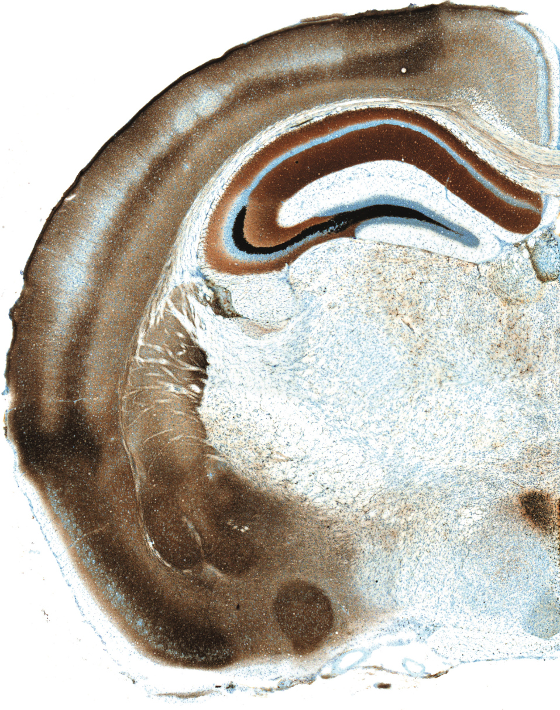
IBB 2022
Additional Learning Ressource:
Neuroanatomy
Charles Watson
Matthew Kirkcaldie, Friedrich Schwarz
April 2022
BLOOD SUPPLY TO THE BRAIN
82
The blood supply to the brain
82
THE CIRCULATION OF CEREBROSPINAL FLUID
85
The cerebrospinal fluid and its circulation
85
STAINING AND IMAGING
87
Staining and imaging - Fundamentals
87
AN INTRODUCTION TO THE ANATOMY OF THE CENTRAL NERVOUS SYSTEM 1
Introduction
1
DEVELOPMENT OF THE NERVOUS SYSTEM
4
The development of the nervous system
4
THE SPINAL CORD
14
Spinal Cord
14
THE BRAIN STEM
22
Brain stem
22
The brain stem cranial nerves
32
The cerebellum
36
DIENCEPHALON
40
The diencephalon
40
HYPOTHALAMUS
42
The hypothalamus
42
Telencephalon
46
The Telencephalon
46
The Broadmann areas of the cortex
51
MOTOR SYSTEMS
53
Motor systems
53
SENSORY SYSTEM
59
The somatosory system
59
The visual system
63
The auditory system
66
The vestibular system
69
Olfaction
73
Taste
77
THE AUTONOMIC NERVOUS SYSTEM
79
The autonomic nervous system (ANS)
79
AN INTRODUCTION TO THE ANATOMY OF THE CENTRAL
NERVOUS SYSTEM
Introduction
This introduction is a very brief summary of the parts of the central nervous system and their
functions. You may find it helpful to have this basic information before you begin a detailed
study of the parts of the brain.
The central nervous system consists of the brain and the spinal cord. The spinal cord is rela-
tively simple in structure, but the brain is very elaborate. The main parts of the brain are the
brain stem, cerebellum, and forebrain.
The brain and spinal cord are connected to parts of the body by nerves. These nerves are both
sensory and motor. There are 12 pairs of nerves connected to the brain (the cranial nerves) and
32 pairs of nerves connected to the spinal cord (the spinal nerves).
The functions of the central nervous system are arranged hierarchically, with the simplest
functions (like standing and walking) located in the spinal cord and the most sophisticated
functions (like thinking and memory) located in the forebrain. In between, the brain stem is
responsible for survival functions like breathing, eating, vocalisation, and balance. The advan-
tage of this hierarchical arrangement is that complex functions are pre-packaged in the brain
stem and spinal cord; they act as complete functional modules, ready to respond to commands
from the forebrain.
The spinal cord
In older times, the spinal cord was pictured as a simple sensory receiving station with simple
connections to the muscles and internal organs. These facts are still partially true, but they
only tell part of the story. For example, the spinal cord action modules can control whole
movement patterns, not just connections to single muscles. More than that, it can coordinate
muscle activity involved in walking, standing, balance, and reaching and grasping. The re-
markable control of the spinal cord can be seen in animals like horses that are able to stand
and move around within minutes of being born because these functions are already pre-pro-
grammed in the spinal cord.
The wiring of the spinal cord enables it to respond to some sensory signals in a rapid reflex
way before the brain is even aware of the sensory signal. A prime example is when we step on
something sharp with bare feet. The spinal cord causes the lower limb to flex and pull away
from the sharp object. At the same time, it causes the extensor muscles in the opposite lower
limb to contract in order to stop you from overbalancing.
The spinal cord is strongly connected to the internal organs and blood vessels through nerves
that are called autonomic. Autonomic nerves control the workings of blood vessels and the in-
ternal organs like the intestines and bladder. Some of these functions, but not all, can be con-
trolled by the forebrain through its connections with the spinal cord. The autonomic nerves
connected to the thoracic spinal cord are called sympathetic nerves, and those connected to
the sacral spinal cord are called parasympathetic nerves.
The brainstem
The brainstem connects the spinal cord with the forebrain. It is the home of basic functional
systems that are vital for survival. These include breathing, chewing, swallowing, vocalisa-
tion, facial expression, and eye muscle control. As well as the control of these actions, the
brainstem receives sensory information related to taste, hearing, vision, the skin of the face,
and balance. The brainstem is also a corridor through which pathways (tracts) travel from the
forebrain to the spinal cord, and from the spinal cord to the forebrain. It also contains centres
that send pathways to keep the forebrain awake and alert.
The brainstem can be divided into two parts: the hindbrain (connected to the spinal cord) and
the midbrain (connected to the forebrain). Each of these parts gives rise to important expan-
sions on the dorsal surface. The dorsal surface of the hindbrain gives rise to the cerebellum,
and the dorsal surface of the midbrain gives rise to two pairs of bumps – the superior and infe-
rior colliculi. The superior colliculi are visual centres, and the inferior colliculi are auditory
centres.
The cerebellum
As we have just noted, the cerebellum grows out of the hindbrain. It is formed from the top
end of the hindbrain, just behind the midbrain. The cerebellum is tiny at birth, but it learns to
coordinate complex movements during the next five years and beyond. The cerebellum con-
tains an enormous number of tiny neurons called granule cells involved in learning coordina-
tion. Almost 80% of all the neurons in the brain are found in the cerebellum.
The forebrain
The forebrain has a central part that continues the brain stem, and a massive outgrowth on
each side called the cerebral hemisphere.
Thalamus and hypothalamus
The smaller central part of the forebrain is made up of two main structures, the thalamus and
the hypothalamus. The thalamus receives sensory pathways related to touch, taste, hearing, vi-
sion, and balance and sends this information to the cerebral hemisphere. The hypothalamus is
the centre for high-level control of the functions that ensure the survival of the individual and
the species. Survival of the individual depends on eating and drinking and being able to de-
fend itself, and survival of the species depends on reproduction and care of offspring. The hy-
pothalamus carries out these functions by controlling the survival modules in the brain stem
and spinal cord and controlling the endocrine and autonomic nervous systems.
The cerebral hemisphere
The cerebral hemisphere consists of an outside layer called the cerebral cortex and a number
of deep neuron groups called the basal ganglia. In the human brain, the cerebral cortex under-
goes massive expansion, which results in deep folding that forms sulci and gyri on the sur-
face. The cerebral cortex is subdivided into about 180 distinct areas, but we only know the
precise functions of some of these areas. However, we do know a lot about the total functions
of the cerebral cortex and it is useful to remember these under eight headings:
-
senses
-
actions
-
thinking
-
memory
-
communication
-
emotions
-
sleep and alertness
-
relationship
Each of these functions can be subdivided. For example, 'senses' includes touch, taste, hear-
ing, vision, smell, and balance, and 'thinking' includes planning, decision making and prob-
lem-solving. Combinations of these eight functions give humans higher-level skills such as
creativity, inventiveness, social organisation, and learning.
1
2
 The basal ganglia – striatum, pallidum, and amygdala
The cerebral hemisphere's deep (non-cortical) parts include several structures, sometimes col-
lectively referred to as the basal ganglia. This term is not entirely satisfactory but can be used
as a shorthand. The larger parts of the basal ganglia are the striatum and pallidum, which are
involved in inherited and learned motor functions. When these areas are damaged during late
pregnancy, the child may develop cerebral palsy – a complex combination of muscle stiffness
and involuntary movements. A smaller member of the non-cortical structures is the amygdala,
which plays a vital role in emotional responses (particularly fear) and social group behaviour.
Questions for repetition
-
What is the central nervous system consisting of?
-
How many spinal nerve pairs are there?
-
In which part of the brain are the most neurons?
-
What parts of the autonomic nervous system exist?
DEVELOPMENT OF THE NERVOUS SYSTEM
The development of the nervous system
About 14,000 genes control the development of the brain in mammals, more than half of the
total number of genes. The genes first provide the general instructions for building connec-
tions in the brain, but later organise the unique connection patterns that characterise each
brain region.
Dorsal and ventral specification of the cells in the neural tube
The embryonic brain develops from a strip of ectodermal cells that form the neural plate. The
edges of the neural plate curl medially to join and form the neural tube, which encloses the
neural canal.
This series of diagrams shows the formation of the neural tube from the embryonic neural
plate. Under the influence of secreted fators from the notochord, the cells of the neural
plate sink down to form a groove and the edges of the groove (red) join to form the neural
tube. The edges of the groove form the cells of the neural crest, which migrate away from
the neural tube to form ganglia, melanocytes, and the skeleton of the face. Figure from
Sanes et al. 2004, courtesy of Dr. Dan Sanes, New York University.
At this early stage, the cells dorsal to the neural canal are directed by Wnt and BMP genes to
form the two alar plates (which handle sensory functions). In contrast, the cells ventral to the
central canal are directed by sonic hedgehog (Shh) genes to form the two basal plates (which
are oriented toward motor functions).
3
4
The basal ganglia – striatum, pallidum, and amygdala
The cerebral hemisphere's deep (non-cortical) parts include several structures, sometimes col-
lectively referred to as the basal ganglia. This term is not entirely satisfactory but can be used
as a shorthand. The larger parts of the basal ganglia are the striatum and pallidum, which are
involved in inherited and learned motor functions. When these areas are damaged during late
pregnancy, the child may develop cerebral palsy – a complex combination of muscle stiffness
and involuntary movements. A smaller member of the non-cortical structures is the amygdala,
which plays a vital role in emotional responses (particularly fear) and social group behaviour.
Questions for repetition
-
What is the central nervous system consisting of?
-
How many spinal nerve pairs are there?
-
In which part of the brain are the most neurons?
-
What parts of the autonomic nervous system exist?
DEVELOPMENT OF THE NERVOUS SYSTEM
The development of the nervous system
About 14,000 genes control the development of the brain in mammals, more than half of the
total number of genes. The genes first provide the general instructions for building connec-
tions in the brain, but later organise the unique connection patterns that characterise each
brain region.
Dorsal and ventral specification of the cells in the neural tube
The embryonic brain develops from a strip of ectodermal cells that form the neural plate. The
edges of the neural plate curl medially to join and form the neural tube, which encloses the
neural canal.
This series of diagrams shows the formation of the neural tube from the embryonic neural
plate. Under the influence of secreted fators from the notochord, the cells of the neural
plate sink down to form a groove and the edges of the groove (red) join to form the neural
tube. The edges of the groove form the cells of the neural crest, which migrate away from
the neural tube to form ganglia, melanocytes, and the skeleton of the face. Figure from
Sanes et al. 2004, courtesy of Dr. Dan Sanes, New York University.
At this early stage, the cells dorsal to the neural canal are directed by Wnt and BMP genes to
form the two alar plates (which handle sensory functions). In contrast, the cells ventral to the
central canal are directed by sonic hedgehog (Shh) genes to form the two basal plates (which
are oriented toward motor functions).
3
4
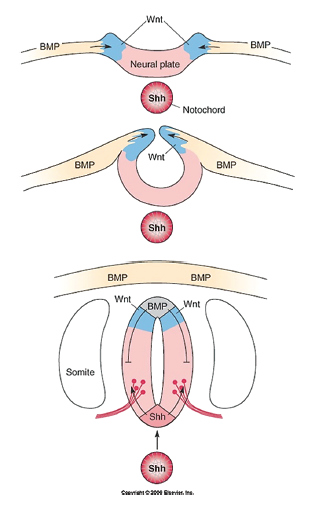
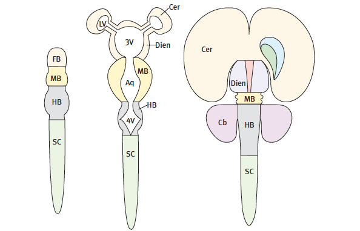
As the neural tube forms from the neural plate, its development is influcend by the expres-
sion of a gene called sonic hedgehog (Shh). Expression of Shh in the notochord induces
the development of the ventral structures (such as motor neurons) in the neural tube. The
dorsoventral patterning of the neural tube is created by the opposing influences od Shh
(ventrally) and BMB and Wnt genes (dorsally). Figure from Sanes et al. 2004, courtesy of
Dr. Dan Sanes, New York University.
As the neural tube closes, a scattering of cells breaks away from the dorsal side to form the
neural crest, which gives rise to the peripheral nervous system, melanocytes, bones and mus-
cles of the face.
Brain vesicles
As cells divide, the rostral end of the tube develops three swellings called the forebrain, mid-
brain, and hindbrain vesicles. The central part of the forebrain vesicle gives rise to two exten-
sions, the lateral vesicles, subsequently forming the cerebral hemispheres. The roof of the
midbrain vesicle (the tectum) gives rise to four swellings that go on to form the superior and
inferior colliculi. The roof of the rostral part of the hindbrain vesicle forms the cerebellum.
The small group of embryonic cells that forms the neural tube quickly multiply and specialise
to form specific functional centres in the brain. The multiplication rate is extraordinary and
the few hundred cells in the primitive human neural tube eventually generate over 80 billion
nerve cells. During the first two years of life, there are times when up to 250,000 new cells are
generated every minute.
Segmentation in the brain
Towards the end of the nineteenth century, several embryological studies found evidence of
segmental subdivisions in the brain, which Orr (1987) called neuromeres. Unfortunately, the
concept of brain segmentation was largely ignored for the next hundred years, before being
spectacularly confirmed by the new science of gene expression in the developing brain, fol-
lowing the discovery of gene targeting in mice by Mario Capecchi (1989). Since then, many
studies of gene expression in the developing vertebrate brain have confirmed that the brain is
made up of a series of distinct neuromeres (Puelles et al., 2013; Watson et al., 2017b): five in
the forebrain, two in the midbrain, and twelve in the hindbrain. Each segment is made up of
alar and basal components around the neural canal.
At the rostral end of the neural tube, three expansions appear - the forebrain, midbrain and
the hindbrain vesicles. The forebrain vesicle forms the cerebral hemispheres, the dien-
cephalon, the hypothalamus, end the eye stalk. The hindbrain forms the isthmus, the
rhombeencephalon, and the cerebrum.
The primary division in the neural tube is the separation of the forebrain and midbrain on the
one hand and from the hindbrain on the other. This separation is defined by the expression of
Otx2 in the forebrain and midbrain and the expression of Gbx2 in the rostral hindbrain. The
expression pattern of Otx2 has led to the proposal that the midbrain segments be declared part
of the forebrain.
Hypothalamic segments and the formation of the telencephalic vesicle and the optic vesicle
The five forebrain segments consist of the terminal hypothalamus (hy2), the peduncular hypo-
thalamus (hy1), and three diencephalic segments called prosomeres (p1, p2, and p3). The ter-
minal hypothalamic segment (hy2) is the rostral end of the neural tube. It gives rise to the te-
lencephalic (cerebral) vesicles dorsally and the optic vesicles rostrally, as well as the posterior
lobe of the pituitary (neurohypophysis).
The telencephalic vesicle is layered: the surface layer is the pallium, and beneath is the sub-
pallium, which splits into four divisions – the striatum, pallidum, the diagonal domain, and
the preoptic area.
Diencephalic segments
The three diencephalic segments, from rostral to caudal, are prosomere 1 (mainly the prethala-
mus), prosomere 2 (mainly the thalamus), and prosomere 3 (mainly the pretectal area). The
pineal gland grows dorsally from p2, and the posterior commissure is found in p3. Although
the diencephalon forms caudally to the hypothalamus, the neuraxis becomes sharply flexed
during development, pushing the hypothalamus into a final ventral position under the pretha-
lamus. This gave the impression that the hypothalamus was a ventral component of the dien-
cephalon, as it was wrongly assumed in an older concept thereof, including the thalamus.
Midbrain segments
The midbrain consists of a large rostral segment (m1) and a much smaller caudal segment
(m2). The dorsal surface of m1 forms the superior colliculus and inferior colliculus on each
side. In the past, the pretectal segment of the diencephalon (including the posterior commis-
sure) was mistakenly thought to belong to the midbrain. Additionally, the first segment of the
hindbrain, the isthmus, was also mistakenly thought to belong to the midbrain, but gene ex-
5
6
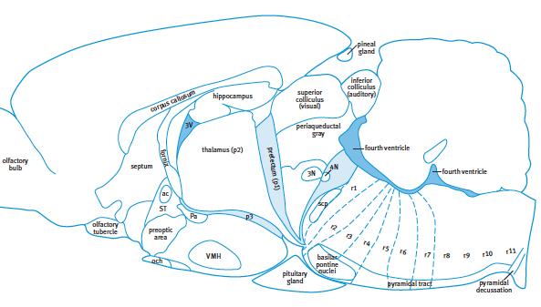
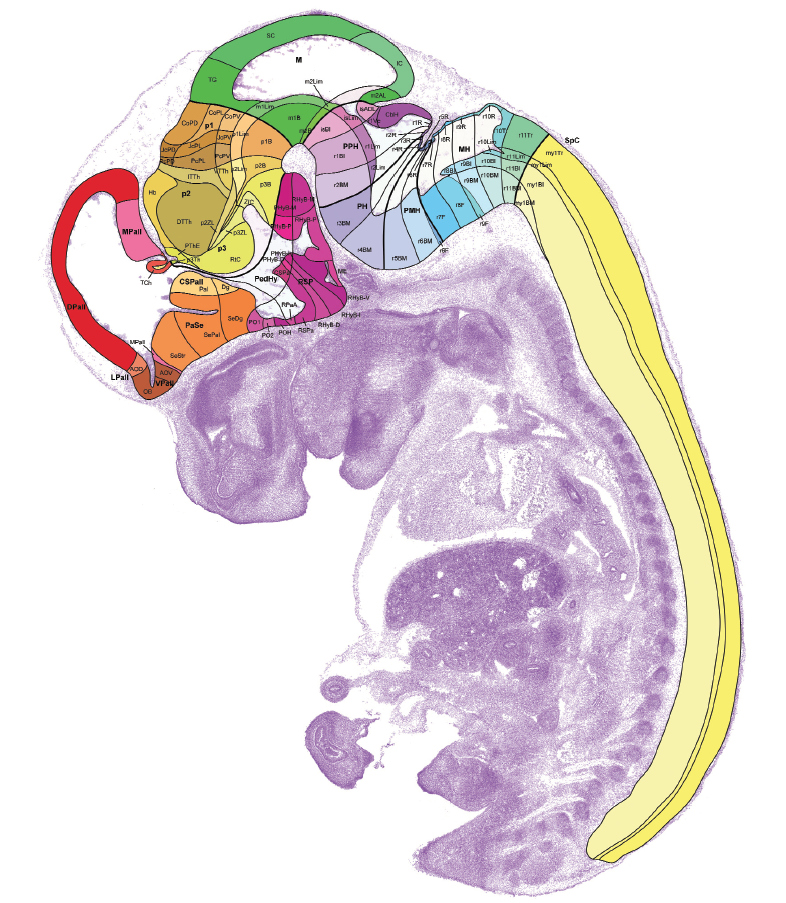
pression proves it is not. The sharp bend of the neuraxis at the level of the midbrain (the
cephalic flexure) results from the under-development of the ventral surface but leaves the dor-
sal surface intact. This creates a heart-shaped profile in sagittal sections.
Hindbrain segments
The hindbrain is made up of the isthmus and eleven rhombomeres (r1 to r11). In older text-
books, the isthmus, which contains the trochlear nucleus, was sometimes called rhombomere
zero (r0). The dorsal parts of the isthmus and rhombomere 1 give rise to the cerebellum. The
pontine nuclei are formed on the ventral surface of rhombomeres 3 and 4.
This is a diagram of an adult rodent brain showing the position of the segments of the
hindbrain. The embryonic hindbarin contains twelve compartments from rostral to caudal.
The first compartment, adjacent to the midbrain is called the isthmus. The remaining
eleven compartments are called rhombomeres. Rhombomeres 2 to 11 are defined by the ex-
pression of different hox genes. The isthmus is defined by the expression of fgf8. The cere-
bellum is formed by extensions of the isthmus and the first rhombomere.
The genes responsible for creating the majority of the rhombomeres (r2 to r11) are the home-
obox (hox) genes. The hox genes, discovered initially in developing insects, are also univer-
sally important for nervous system development in vertebrates. The first four hox groups
(hox1-hox4) are expressed in the hindbrain, and hox5-hox13 are expressed in the spinal cord,
trunk, limbs, and tail.
The hox genes are not expressed in the isthmus and in the first rhombomere, which instead ex-
press Gbx2, further subdivided by Fgf8 expression in the isthmus.
The neural canal of the hindbrain opens up dorsally to form the fourth ventricle, with a thick-
ened lateral margin called the rhombic lip.
Flexion of the neural tube
As mentioned above, the neural tube does not remain straight during development. Because of
differential dorsal and ventral growth in some areas, the tube forming the brain is forced into
flexion at two points. The most significant of these is the cephalic flexure in the midbrain re-
gion. It is so severe that it creates almost a 180-degree bend in the neuraxis and pushes the hy-
pothalamus ventral to the diencephalon. A second, less severe flexion is found in the hind-
brain.
This is a photograph of a sagittal section of a mouse embryo (E13.5) with an overlay show-
ing the subdivions of the developning nervous system. The image is taken from the refer-
ence atrlas developed by Luis Puelles as part of the Allen Developing Mouse Brain Atlas
created by the Allen Institute for Brain Science.
Lack of appreciation of the significance of the cephalic flexure has led to tragic misinterpreta-
tion of the relationships between parts of the forebrain, particularly the belief that the hypo-
thalamus is simply some kind of ventral addition to the thalamus.
Regionalisation in the spinal cord
The spinal cord is traditionally divided into a number of segments related to the emergence of
individual spinal nerves. The presence of a vertebra between each pair of spinal nerves gives
the impression that the spinal cord is a segmented structure, but this is an illusion, and the
roots of the spinal nerves run in a continuous strip along the cord inside the vertebral canal.
On the other hand, there is clear evidence from anatomical and hox gene expression studies
that the spinal cord of four-limbed vertebrates can be divided into six distinct functional re-
gions - prebrachial (C1-C4), brachial (C5-T1), postbrachial ((T2-L1), crural (L2-S1), postcru-
ral (S2-S4), and caudal (S5-Co2). The brachial and crural regions contain the motor neurons
7
8
that supply the limb muscles of the upper and lower limbs, respectively. The postbrachial and
postcrural parts contain the preganglionic neurons of the sympathetic and spinal parasympa-
thetic systems, respectively. The prebrachial region contains the motor neurons supplying the
cervical muscles, and the caudal region contains motor neurons supplying the tail muscles.
Neural crest
Just after the closure of the neural tube, a group of cells migrates away from the dorsal surface
of the neural tube to form a column on either side, called the neural crest. The neural crest
cells give rise to both neurons (the ganglion cells of the autonomic nervous system and the
sensory dorsal root ganglion cells of cranial and spinal nerves) and non-neural elements such
as the melanocytes of the skin and (surprisingly) the bones and muscles of the face. The
melanocytes migrate long distances to reach all areas of the skin surface.
Development of the peripheral nervous system
The peripheral nervous system is made up of three components – the axons of motor neurons
that connect to muscles, the dorsal root ganglion cells and their long axons, which reach sen-
sory receptors, and the ganglia and postganglionic axons of the sympathetic and parasympa-
thetic ganglion cells. It is important to note that the optic and olfactory nerves are not part of
the peripheral nervous system since they are direct outgrowths of the forebrain, with myelin
produced by oligodendrocytes instead of Schwann cells.
The elements of the peripheral nervous system are primarily distributed by cranial nerves 3-12
and by the spinal nerves. In both cranial and spinal nerves, the axons of motor neurons grow
out until they reach their target muscle.
Adult neurogenesis
Some parts of the mature mammalian brain, notably the hippocampus, the cerebellum, and the
olfactory bulb, can actually generate new neurons. In most other areas of the brain, it seems
neuroplasticity appears to be solely the result of the massive reorganisation of synaptic net-
works in response to new demands.
Migration of neurons
In many parts of the brain, neurons continue to develop in the place where they were first
formed. These neurons may send their axons to other areas in the brain, but the neuronal cell
bodies do not move. However, in a few places in the brain, groups of neurons migrate from
their place of birth to reach their final location. In the cerebral cortex, most neurons are gener-
ated at the surface of the ventricle and migrate outward to find the cortical layer in which they
will finally reside. Most of the neurons that migrate toward the surface of the brain (radial mi-
gration) are the future pyramidal and stellate neurons of the cortex, both of which are excita-
tory glutamatergic neurons. On the other hand, the small GABAergic inhibitory neurons of
the cortex arise in the base of the forebrain and migrate tangentially to reach their final settle-
ment in the cortex, so the final structure is the product of large migrations moving at right an-
gles to each other. The GABA neurons constitute 20% of the cortical neurons in mammals.
The largest migration of neurons in the brain begins in the rostral part of the rhombic lip,
which borders the rostral end of the fourth ventricle of the hindbrain. Most of the rhombic lip
cells migrate dorsally into the developing cerebellum, while smaller numbers migrate ven-
trally into the longitudinal part of the hindbrain. Those that migrate into the cerebellum form
the tiny granule cells that eventually make up 70% of all the neurons in the brain. Because of
this, the rhombic lip is now recognised as the most active cell generation area in the develop-
ing nervous system.
The wide dispersal of neurons and melanocytes from the neural crest constitutes another ma-
jor neural migration during development. The process by which the crest cells detach and
move through tissue involves many genes, some of which are implicated in cancer metastasis.
Formation of synapses
Developing neurons sprout thin outgrowths called processes, which connect with other nerve
cells or muscle cells. The connections they make, generally between an axon process on the
sending side and a dendrite process on the receiving side, are called synapses. Much of the ba-
sic wiring of the brainstem and spinal cord is laid down early in fetal development. These
early connections are those required for survival as they control breathing and swallowing.
There is no room for error here, and these vital connections are formed according to a strict
program. The first movements of the fetus early in pregnancy in humans are clear evidence of
the formation of early connections between neurons and muscle cells. In mice, the connec-
tions with muscles are made after only 12 days of embryonic development, but these connec-
tions are not made until about 12 weeks in humans.
The second category of connections starts late in fetal development and extends into child-
hood and adult life. These later connections are less rigidly programmed, and they are made
while the newborn mammal interacts with its environment and is learning new skills. The pe-
riod in which this type of plasticity is most active is termed the "sensitive period" for sensory
and motor systems and includes a shorter "critical period" during which the fundamental or-
ganisation is determined. It was formerly believed that the formation of new connections
stopped sometime soon after birth, but it is now known that new connections are a normal
part of the growth of all brains throughout life. The ability of the brain to constantly form new
connections and to reshape patterns of connection in response to new information is referred
to as plasticity. The plasticity of the human brain is remarkable. It has been estimated that the
brain forms an average of a million new connections per minute throughout the whole of life.
Axon guidance
An axon that grows out from a neuron will only be functionally successful if it connects with
the correct target cell. The mechanism that helps it find its correct target is called axon guid-
ance, or axon pathfinding. Many growing axons have been found to be extraordinarily accu-
rate in finding the right path to their target. In some cases, the axons neurons find their proper
partner because they stick to matching molecules on the surface of other axons or have recep-
tors sensitive to molecules made by their targets, which are both controlled by a common
gene. For example, motor neuron clusters in the spinal cord and the muscle group to which
they connect have been shown to share a specific gene marker. Axon guidance works by a
process of stepwise refinement: First, the growing axon follows a general pathway, bundling
with similar axons and obeying general routing cues (to which it may or may not be sensitive)
such as crossing the midline. Then upon nearing its destination, it detects more specific chem-
ical signals from its target. A gene pairing system like this, encoding attractant molecules and
the receptors which respond to them, also exists in the hindbrain neuron groups that connect
to particular cells in the cerebellum.
Whatever the mechanisms, the formation of early connections is remarkably accurate and reli-
able, so that brains are always initially wired up in the same way. The growing axon's tip is a
very active enlarged area called a growth cone. The growth cone is a highly mobile structure
that appears to feel its way through tissue, detecting very faint chemical signals that lead it to-
wards its targets or which steer it away from unwanted connections. The signs may be fixed in
place, like signposts, or may be distributed over long distances, like the breadcrumbs left be-
hind by Hansel and Gretel.
9
10
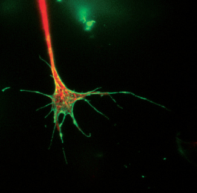
A growth cone at the tip of an axon from a rat dorsal root ganglion neuron in cell culture.
Staining for actin (green) outlines the flattened lamellipodium, with numerous fine filopo-
dia extending to explore the environmet. Microtubules (red) fill the axon and extend into
the central lamellipodium, the site of active growth. In vivo, the growth cone would have a
three-dimensional ruffled shape. Image courtesy of Michael Thompson and Dr. Lisa Foa,
University of Tasmania, Australia.
At the stage when neurons are maturing and sending out axons to make contact with other
neurons, the developing nervous system secretes a tapestry of guidance molecules that attract
and repel, defining pathways, marking crossing points, and identifying destinations. Growing
axons explore this space with their growth cones, responding to some cues and ignoring oth-
ers, according to the receptors they carry. Axons from diverse regions converge on shared
pathways and then branch out to distinct targets as they encounter individual cues. Several
guidance molecules have been identified, and their functions have been analysed in detail;
they include netrins, semaphorins, and Slit proteins. Once they reach their targets, axons stop
growing because they encounter cell surface molecules that turn off growth and stimulate
synaptic formation.
These stop signals vary in concentration, so arriving axons may fan out across the target tissue
in an organised gradient. In the case of ephrins and Eph receptors, some axons will have few
Eph receptors, and some will have many. If they encounter a tissue with a gradient of ephrins
expressed, axons with many receptors will stop responding to small concentrations of ephrins.
In contrast, those with few receptors will push past low-ephrin areas and stop when the
ephrins become more concentrated. Since the Eph receptors and ephrins are regulated by ge-
netic gradients in the target and the origin of the axons respectively, this simple mechanism
preserves topographic arrangements across long distances.
Synapse pruning and nerve cell death
Not all of these new connections work as well as they should, and millions of synapses are
pruned during early brain development so that the mature systems formed are accurate and ef-
ficient. In general, most systems follow a pattern of being over-connected initially, which is
then refined by pruning, which continues throughout life. The same pruning process is applied
to neurons: many are killed off during development, specifically those that have made poor
connections or are otherwise unnecessary. These waves of synaptic pruning and neuronal
death are part of the process of building an efficient nervous system. As with synapses, the
pruning of cells and axon branches continues throughout life.
Critical periods in fetal development
Certain developmental insults can cause devastating damage to the developing brain and
spinal cord. These include vitamin deficiency (neural tube defect), alcohol (fetal alcohol syn-
drome), iodine deficiency, and infections (rubella). Each one of these can cause widespread
damage to the fetal brain. It is possible that viral infections may also cause cerebral palsy dur-
ing pregnancy.
Neural tube defects (NTD), the most common of which is called spina bifida, are caused by a
disruption of the very early development of the neural tube, with incomplete closure at the
rostral and/or caudal ends. The most common place for incomplete closure is in the caudal
part of the spinal cord, and in the most severe cases, the damage to the spinal cord results in
paralysis of the lower limb and loss of control of the bladder and bowel. Some families have a
genetic predisposition to NTD, but the most critical factor is a lack of the vitamin folate.
Since the risk period occurs before apparent signs of pregnancy, all women who might be-
come pregnant should make sure that their folate intake is high–either by eating leafy vegeta-
bles and other folate-rich foods or by taking folate vitamin tablets as well a supplement. In
many countries, bread flour and breakfast cereals are enriched with folate to ensure that the
whole population has adequate folate levels.
Alcohol consumption by women in the first eight weeks of pregnancy can have devastating
effects on early brain development, and the child may be born with significant deficiencies in
brain function. The condition is called fetal alcohol syndrome.
Within the first three months of pregnancy, rubella infection (German measles) can cause ma-
jor brain abnormalities, including deafness and blindness.
In the West, it is not widely appreciated that iodine deficiency during fetal development is the
most important cause of intellectual disability worldwide. But it is still affecting millions of
children in mountainous areas of Asia, Southeast Asia, and south-eastern Australia, where io-
dine has been leeched out of the soil. Iodine deficiency results in hypothyroidism that perma-
nently damages the developing brain by affecting key genes for connectivity. The problem of
iodine deficiency is easily remedied with the supply of iodine supplements in salt and oil, but
this is not always easy to achieve because of logistic impediments.
Critical periods during postnatal development
More than sixty years ago, it was shown that kittens that had one eye kept closed during a par-
ticular period after birth were unable to develop binocular vision subsequently. This led to a
theory that one must receive a specific sensory input within a limited period for a part of the
brain to develop normally. This concept had a major impact on theories of postnatal develop-
ment. In particular, it raised serious concerns that children deprived of a particular stimulus or
environment for a short period in their life might be deprived forever of some vital capability.
However, this view has not been supported by contemporary evidence, and it is now felt that
the concept should be applied more loosely. The modern version of this concept argues that
critical periods are the ideal time for most children to receive a particular input. However, it
accepts that delayed inputs can still be effective. For this reason, the term 'sensitive periods' is
commonly used to denote longer time intervals during which experience can shape the ner-
vous system. Sensitive periods during human postnatal development that have received partic-
ular attention are those for language acquisition (mainly nine months to five years), develop-
ment of emotional control (from birth to two years), motor control (from birth to eight years),
and habitual ways of responding, such as enthusiasm and persistence (from six months to two
years).
Later processes that refine the structure of the brain
The development of the brain does not stop in childhood. As noted above, the formation of
new synapses continues throughout life. In the cerebral cortex, this is accompanied by the
continued growth of dendrites. From birth to adulthood, the mass of the cortex increases five-
fold without any new cells forming – an increase almost entirely due to dendrite growth. It
has been shown that there is a marked increase in new synapse growth in the frontal lobes
during adolescence so that the frontal lobes are not fully mature until about 25 years of age.
Another vital process that occurs during childhood and adolescence is that of progressive
myelination. Myelin sheaths are laid down during the postnatal years until early adulthood.
Myelination increases the speed of transmission of action potentials along axons. This might
11
12
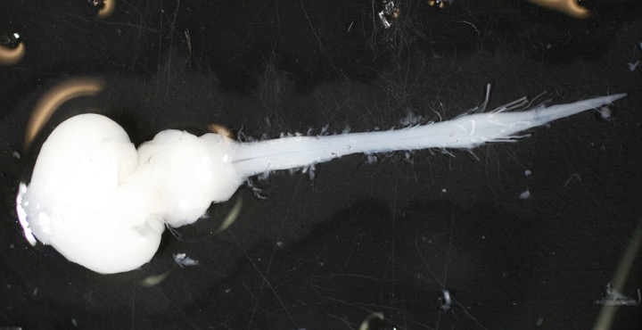
provide a mechanism for stabilising connection times while the body enlarges. The distance
from the spinal cord to the foot muscles increases from about 300 mm in a baby to about 1000
mm in an adult; if myelination did not occur, it could take thirty times as long for a command
to reach the muscles in an adult.
The development of the cerebellum is delayed compared with other parts of the brain. At the
time of birth, the cerebellum is extremely small, but during the first six years of life in hu-
mans, it grows to the size of an orange. The cerebellum's role is to assist with the coordination
of movement, so its development is delayed so that it matches the period when the child is
learning new motor skills.
Neural plasticity
Neural plasticity refers to the ability of the mature brain to change itself by generating new
neurons or by making new connections. The realisation that the brain can continually change
itself is quite new; it has led to significant changes in neuroscience thinking. In the past, it was
thought that the structure of the mature mammalian brain could not be changed so that some-
one who suffered a stroke, or some other form of brain injury would be condemned to a per-
manent loss of function. However, since 1990 it has become evident that the brain can com-
pensate by creating major changes in connections after injury, and many rehabilitation pro-
grams have been developed to take advantage of this capacity.
The ability to grow and make new connections is not restricted to injured brains - it also oc-
curs in normal brains asked to cope with large amounts of new information. For example, an
MRI study of the brains of final-year medical students found that the grey matter in their pari-
etal cortex and hippocampus increased substantially in the period leading up to their final ex-
ams.
A pioneer in the area of neuroplasticity, Mike Merzenich, has promoted the idea that exercis-
ing the brain can increase its capacity as a defence against cognitive deterioration in elderly
individuals.
Questions for repetition
-
How many genes are involved in the development of the mammalian brain?
-
How long does the maturation of the frontal cortex take?
-
In which brain areas does adult neurogenesis take place to any notable extent?
-
What are the components of the peripheral nervous system?
-
What are the names of the signalling molecules that orient ventrally or dorsally of the neural
tube?
-
Where are the first four Hox genes expressed?
-
What is one of the main reasons for neural tube defects?
THE SPINAL CORD
Spinal Cord
The central nervous system consists of the forebrain, brainstem, and spinal cord. The fore-
brain is comprised of the cerebral hemispheres, olfactory structures, hypothalamus, and dien-
cephalon. The brainstem consists of the midbrain (mesencephalon) and the hindbrain
(rhombencephalon), comprising 12 segments.
The spinal cord is the simplest part of the central nervous system containing:
-
sensory neurons that receive sensation from the sensory receptors
-
motor neurons that control muscles
-
long tracts connecting the spinal cord with the brain
-
the preganglionic nuclei of the autonomic nervous system
-
pattern generators for complex movements such as running at different speeds
The spinal cord is a long cylindrical structure extending from the base of the skull to the first
lumbar vertebra in the human. The spinal cord is noticeably thicker in the regions that are
connected to the upper and lower limb.
In this photograph of mouse spinal cord, the thickened regions represent the areas of at-
tachment of the upper and lower limb nerves.
In a transverse section of the spinal cord, a central butterfly-shaped area of grey matter is sur-
rounded by white matter. The grey matter is divided into ventral and dorsal horns, and the
white matter can be divided into three funiculi (columns) – dorsal, lateral and ventral.
The grey matter can be further subdivided into a series of layers called the laminae of Rexed.
Layers 1 to 4 form the dorsal horn and are related to sensory input. Layers 7 to 9 form the
ventral horn and have functions generally to the motor system, while the limb and trunk motor
neurons are located in lamina 9. In between the dorsal and ventral horns lies the lamina 5,
which is the site of pattern generators for limb movements. Lamina 6 is small and is not
present at all levels.
13
14

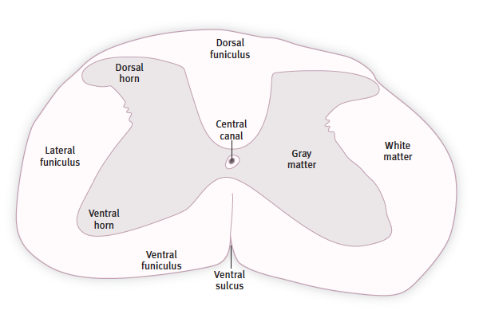
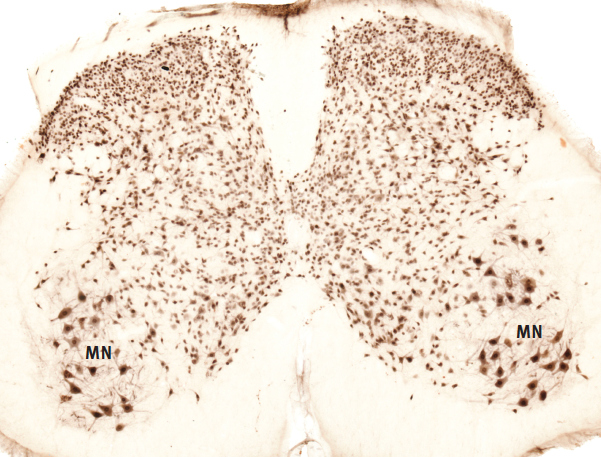
Schematic transverse section through the spinal cord.
Schematic transverse section through the spinal cord showing important laminae.
The spinal cord receives sensory information from the skin, joints, and internal organs; this
information is processed locally and sent to the brain. The motor neurons in the spinal cord
connect with the muscles, blood vessels, and internal organs and can initiate activity in these
structures. The brain sends nerve fibre bundles (tracts) to control these motor neurons.
The mammalian spinal cord is made up of six distinct anatomical and functional regions–one
for the neck (prebrachial), one for the forelimb (brachial), one for the sympathetic outflow
(postbrachial), one for the lower limb (crural), one for the pelvic parasympathetic outflow
(postcrural), and a last one for the tail (caudal).
In the human, the prebrachial region extends from spinal cord segments C1 to C4, the brachial
region from C5 to T1, the postbrachial region from T2 to L2, the crural region from L3 to S1,
the postcrural region from S2 to S4, and the caudal region from S5 to the coccygeal segments.
The spinal cord contains sophisticated pattern generators that can initiate different kinds of
coordinated movements. Movement patterns generated in the spinal cord include locomotion,
posture, and balancing.
Motor neurons in the spinal cord
Motor neurons initiate muscle fibre contraction and secretion of glands, acting as the final
common pathway for motor function's central and peripheral neural pathways. The motor neu-
rons in the spinal cord belong to two major functional groups – somatic and autonomic. So-
matic motor neurons innervate skeletal (voluntary) muscle while autonomic motor neurons in-
nervate smooth muscle and glands.
Somatic motor neurons are located in the ventral horn of the grey of the spinal cord in lamina
9. These are large multipolar neurons that stain well with acetylcholinesterase and NeuN
markers.
A transverse section of mammalian spinal cord stained for NeuN showing upper limb mo-
tor neurons (MN) in lamina 9 of the ventral horn.
The lamina 9 motor neurons are large because they each support a very long axon that runs to
supply the striated muscles of the axial skeleton (muscles of the neck, trunk, and tail) and the
muscles of the upper and lower limbs. The motor neurons innervating axial muscles are
present at all spinal cord levels. Still, the large motor neurons innervating limb muscles are
only present at the level of origin of the upper limb nerves (C5 to T1 spinal cord segments in
the human) and the level of origin of the lower limb nerves (L3 to S1 spinal cord segments in
the human).
The autonomic motor neurons of the spinal cord can be divided into two separate groups–the
preganglionic motor neurons of the sympathetic nervous system and the preganglionic motor
neurons of the pelvic parasympathetic system.
15
16
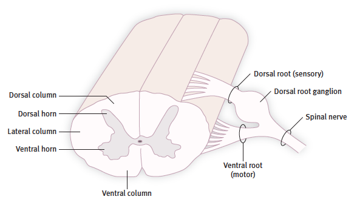
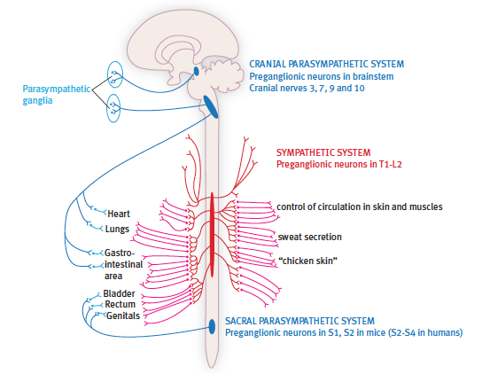
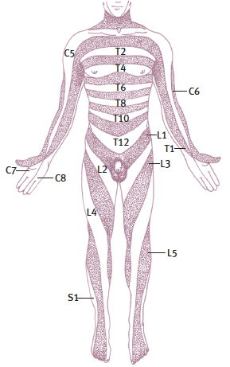
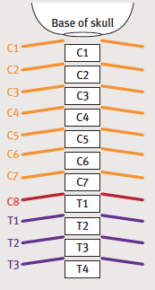
In humans, the sympathetic preganglionic motor neurons are found at the T2 to L2 spinal
cord, and the parasympathetic preganglionic motor neurons are located from S2 to S4
spinal cord segments.
Spinal cord nerve roots
A dorsal and ventral root connects each spinal nerve to the spinal cord. The ventral root con-
tains the axons of motor neurons, and the dorsal root contains sensory axons. The cell bodies
of the sensory axons are located in the dorsal root ganglion, which forms a swelling attached
to the dorsal root.
Overview spinal nerve roots.
The spinal nerves
The spinal nerves are named for the vertebra adjacent to their exit, but the naming convention
changes from cervical to thoracic and lower levels. In the cervical region, the nerves are
named for the vertebral body below their exit so that C1 exits above the C1 vertebra, C2
above the C2 vertebra, and so on. However, in the thoracic and lower vertebral levels, the
emerging nerves are named for the vertebral body above their level of exit so that T1 exits be-
low the T1 vertebra, T2 below the T2 vertebra, and so on. This creates a problem for the nerve
identity emerging between the C7 vertebra and the T1 vertebra since it does not fit either of
these definitions. The solution was to name this nerve the C8 nerve, even though there is no
C8 vertebra. The result is that the human has 7 cervical vertebrae and 8 cervical spinal nerves.
Schematic overview of the spinal nerves.
Below the cervical region, there are 12 thoracic vertebrae and 12 thoracic spinal nerves, 5
lumbar vertebrae and 5 lumbar spinal nerves, 5 sacral vertebrae and 5 sacral spinal nerves.
The number of tail (coccygeal) vertebrae varies from one to two.
The forelimb muscles are supplied by nerves from the brachial plexus, formed by the C5, C6,
C7, C8, and T1 spinal nerves. The hindlimb muscles are supplied by the lumbosacral plexus,
formed by the L2, L3, L4, L5, and S1 spinal nerves.
Dermatomes
Each spinal nerve supplies a specific strip of skin from the middle of the back to the ventral
midline. The skin area provided by a single spinal nerve is called a dermatome. This diagram
shows the distribution of the spinal dermatomes from C5 to S1.
The dermatomes of the human body.
17
18

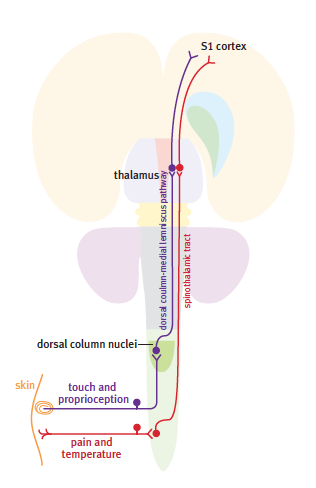
Spinal cord tracts
Descending tracts in the spinal cord
Descending tracts arise in the cerebral cortex and the brainstem. Most descending tracts cross
in the brainstem and then descend in either the lateral or ventral funiculus of the spinal cord.
The descending tracts terminate on interneurons in laminae 5, 6, and 7, motor neurons in lam-
ina 9, or both. In functional terms, a useful distinction can be made between the descending
tracts in the lateral funiculus and those in the ventral funiculus: the lateral funiculus tracts
(corticospinal, rubrospinal, lateral reticulospinal) are more concerned with the control of
flexor movements and particularly movements of the distal parts of the limbs, whereas the de-
scending tracts of the ventral funiculus (vestibulospinal, tectospinal, medial reticulospinal) are
more concerned with the control of extensor (postural) muscles of the trunk and proximal
parts of the limbs. The corticospinal tract travels from the motor cortex through the internal
capsule, pons, and pyramid to reach the pyramidal decussation, crossing to the opposite side.
Schematic overview of the coricospinal tract.
The internal capsule strip of white matter in the cerebral hemisphere is a common site of dam-
age to the corticospinal tract in humans, where a haemorrhage or blood clot can cause a
stroke. An internal capsule stroke results in paralysis and stiffness in the muscles of the oppo-
site side of the body.
In primates, some corticospinal fibres make direct contact with motor neurons in lamina 9.
Still, direct connections from the cerebral cortex to motor neurons are rare or absent in non–
primate mammals. The cortical control of limb movements in non–primate mammals is
mainly based on a major projection to lamina 5 in the spinal cord, which contains a highly or-
ganized system of limb movement pattern generators (Levine et al., 2014).
Some brain stem centres send tracts to the spinal cord. These are the red nucleus (rubrospinal
tract), superior colliculus (tectospinal tract), vestibular nuclei (vestibulospinal tracts), and
reticular nuclei (reticulospinal tracts).
Ascending tracts in the spinal cord
Both the spinothalamic tracts and the dorsal columns (gracile and cuneate fasciculi) convey
somatosensory information from one side of the body to the cerebral cortex of the opposite
side via the thalamus. Each of these systems is basically a chain of three neurons: the first
neuron is a dorsal root ganglion cell with its central process entering the spinal cord to ascend
for some distance before it synapses with the second neurone in the chain; the axon of the sec-
ond neuron crosses the midline immediately and climbs to the thalamus; the third neuron
sends its axon from the thalamus to the cerebral cortex.
Schematic overview of sensory pathways.
It is important to note that the central process of the first neuron in the spinothalamic system
is short (its axon ascends for only a few spinal cord segments). However, the main process of
the first neuron of the dorsal column system ascends all the way to the medulla oblongata.
The first neuron of the spinothalamic system ascends in the dorsolateral fasciculus (just exter-
nal to lamina 1), and the cell body of the second neuron may lie in lamina 1, 2, 3, or 4.
The axon of the second spinothalamic neuron crosses the midline in the anterior white com-
missure of the spinal cord. It then ascends in either the lateral spinothalamic pathway (pain
and temperature sensation) or the anterior spinothalamic tract (touch sensation).
The dorsal column tracts carry touch, deep pressure, proprioceptive, and vibration sense infor-
mation in the gracile and cuneate fasciculi - the gracile fasciculus mainly conveys information
from the hindlimb, and the cuneate fasciculus conveys information from the forelimb. Note
that these two pathways do not cross the midline until they reach the brainstem.
The spinocerebellar tracts
The dorsal spinocerebellar and ventral spinocerebellar tracts convey position sense (proprio-
ception) and tactile information to the cerebellum. These tracts end on the same side as they
began. As with the other ascending fibre systems, the first neuron of the dorsal spinocerebellar
and ventral spinocerebellar systems is a dorsal root ganglion cell. In the case of the dorsal
spinocerebellar system, the first neuron ends by synapsing on neurons of the dorsal nucleus
(the nucleus of Clarke), which is a prominent cell group found in thoracic and upper lumbar
levels (note that these are the same levels at which the preganglionic column of the sympa-
thetic nervous system is located). The dorsal nucleus lies just dorsolateral to the central canal.
The axons of these cells form the dorsal spinocerebellar tract in the lateral funiculus and end
in the cerebellar cortex of the same side. The ventral spinocerebellar system is more compli-
19
20
 cated anatomically, but, in general, it is similar to the dorsal spinocerebellar system since it
ends in the cerebellum of the same side.Both the dorsal spinocerebellar and ventral spinocere-
bellar systems serve only the body's rear half; the body's front half is served by an additional
spinocerebellar system called the external cuneate system.
Schematic overview of the spinocerebellar tracts.
Questions for repetition
- Which laminae of the spinal cord are mainly associated with motor functions?
- Which brain area is frequently affected by strokes? What are the consequences?
- Which neurons constitute the spinal cord?
- What sensory information is transmitted in the dorsal columns of the spinal cord?
- From which spinal cord segments do the preganglionic sympathetic nerves originate?
THE BRAIN STEM
Brain stem
The brain stem is made up of two parts, the midbrain (mesencephalon) and the hindbrain
(rhombencephalon). The midbrain is continuous with the forebrain, and the hindbrain is con-
tinuous with the spinal cord.
In older textbooks, the brain stem is divided into three parts: midbrain, pons, and medulla ob-
longata. Unfortunately, this schema, based on a now outdated view of human brain anatomy,
is misleading and inaccurate. The confusion relates to the mushroom–like expansion of the
pons in the human brain so that it appears to begin adjacent to the midbrain and extend to half
the length of the hindbrain. The true nature of the mammalian pons is explained in the Chap-
ter on brain segmentation. In the meantime, we strongly recommend that you use the terms
'midbrain' and 'hindbrain' to subdivide the brain stem.
The brain stem serves a number of key functions:
-the control of the muscles of the eye, face, mouth, and throat; control of the salivary
and lacrimal glands;
-control of the internal organs of the thorax and abdomen;
-receiving sensation from the face, mouth, and throat, including taste;
-receiving sensation from the special sense organs for vision, hearing and balance;
-coordination of movement of the limbs and trunk
-centers for control of breathing, micturition, and defecation;
-centers for maintenance of alertness;
-acting as a corridor for long motor and sensory pathways that connect the brain with
the spinal cord;
-and as a place of origin of descending motor pathways.
The brain stem is connected with the muscles and sensory organs of the head through ten
pairs of cranial nerves (cranial nerves 3 to 12). There is a separate chapter detailing the
anatomy and connections of the brain stem cranial nerves.
The brain stem has a basic cylindrical structure, but there are major outgrowths from the dor-
sal surface. In the midbrain, these dorsal outgrowths are called the superior and inferior colli-
culi–two pairs of rounded bumps that are receiving centers for visual pathways (the superior
colliculi) and auditory pathways (the inferior colliculi). The large outgrowth from the hind-
brain is the cerebellum. During early development, the cerebellum grows out of the rostral
part of the hindbrain, just caudal to the midbrain.
21
22
cated anatomically, but, in general, it is similar to the dorsal spinocerebellar system since it
ends in the cerebellum of the same side.Both the dorsal spinocerebellar and ventral spinocere-
bellar systems serve only the body's rear half; the body's front half is served by an additional
spinocerebellar system called the external cuneate system.
Schematic overview of the spinocerebellar tracts.
Questions for repetition
- Which laminae of the spinal cord are mainly associated with motor functions?
- Which brain area is frequently affected by strokes? What are the consequences?
- Which neurons constitute the spinal cord?
- What sensory information is transmitted in the dorsal columns of the spinal cord?
- From which spinal cord segments do the preganglionic sympathetic nerves originate?
THE BRAIN STEM
Brain stem
The brain stem is made up of two parts, the midbrain (mesencephalon) and the hindbrain
(rhombencephalon). The midbrain is continuous with the forebrain, and the hindbrain is con-
tinuous with the spinal cord.
In older textbooks, the brain stem is divided into three parts: midbrain, pons, and medulla ob-
longata. Unfortunately, this schema, based on a now outdated view of human brain anatomy,
is misleading and inaccurate. The confusion relates to the mushroom–like expansion of the
pons in the human brain so that it appears to begin adjacent to the midbrain and extend to half
the length of the hindbrain. The true nature of the mammalian pons is explained in the Chap-
ter on brain segmentation. In the meantime, we strongly recommend that you use the terms
'midbrain' and 'hindbrain' to subdivide the brain stem.
The brain stem serves a number of key functions:
-the control of the muscles of the eye, face, mouth, and throat; control of the salivary
and lacrimal glands;
-control of the internal organs of the thorax and abdomen;
-receiving sensation from the face, mouth, and throat, including taste;
-receiving sensation from the special sense organs for vision, hearing and balance;
-coordination of movement of the limbs and trunk
-centers for control of breathing, micturition, and defecation;
-centers for maintenance of alertness;
-acting as a corridor for long motor and sensory pathways that connect the brain with
the spinal cord;
-and as a place of origin of descending motor pathways.
The brain stem is connected with the muscles and sensory organs of the head through ten
pairs of cranial nerves (cranial nerves 3 to 12). There is a separate chapter detailing the
anatomy and connections of the brain stem cranial nerves.
The brain stem has a basic cylindrical structure, but there are major outgrowths from the dor-
sal surface. In the midbrain, these dorsal outgrowths are called the superior and inferior colli-
culi–two pairs of rounded bumps that are receiving centers for visual pathways (the superior
colliculi) and auditory pathways (the inferior colliculi). The large outgrowth from the hind-
brain is the cerebellum. During early development, the cerebellum grows out of the rostral
part of the hindbrain, just caudal to the midbrain.
21
22

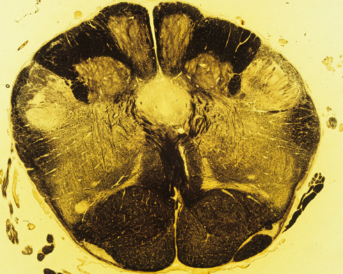
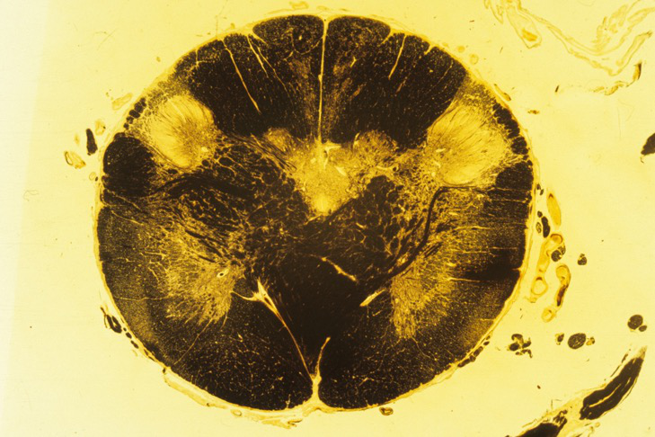
A sagittal section through the brain of a marmoset monkey showing the midbrain and hind-
brain. The cerebellum is a large outgrowth connected to the dorsal surface of the hind-
brain. The two rounded structures on the dorsal surface of the midbrain are the superior
and inferior colliculi.
BRAIN STEM SECTIONS STAINED FOR MYELIN
The next section involves the examination of images of human brain stem and the identifica-
tion of major structures in these sections. We will first look at the main features of brain stem
sections in summary and then look at details within each section. The sections shown here are
stained to show myelinated fibers in order to present a clear picture of the main pathways in
the brain stem. Groups of neurons (nuclei) do not stain and appear as pale areas in these sec-
tions.
SECTIONS THROUGH THE CAUDAL HINDBRAIN
The caudal end of the human brain stem is basically similar to sections of the cervical spinal
cord. However, a series of important tract relocations changes the appearance as we ascend
through the hindbrain. The main changes are the following:
-The relocation of the corticospinal tract from its lateral position in the spinal cord
to a ventral position in the pyramid of the opposite side. The corticospinal tract is a
descending tract, but here we are following it in reverse.
Caudal human hindbrain at the level of the pyramidal decussation.
-The termination of the gracile and cuneate fasciculi in the gracile and cuneate
nuclei – after synapsing, this pathway continues by crossing the midline (internal
arcuate fibers) to reach a position dorsal to the pyramid - the newly formed crossed
tract is called the medial lemniscus. The medial lemniscus travels rostrally to reach
the thalamus.
Hindbrain at the level of the gracile and cuneate nuclei and the somatosensory decussation.
23
24


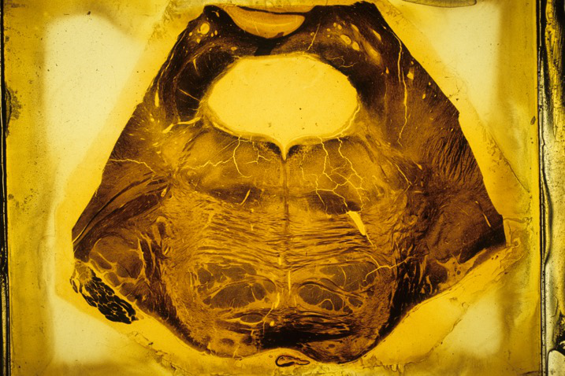
-After all, the gracile and cuneate fibers have synapsed, and the second axon has
crossed the midline to reach the medial lemniscus, the dorsal region of the brain
stem is progressively vacated until nothing is left – the remaining space is occu-
pied by the fourth ventricle.
The hindbrain at the level of the caudal end of the fourth ventricle. The most outstanding
feature here is the inferior olive.
-The caudal end of the fourth ventricle is only a thin tube that is continuous with
the central canal, but it expands in more rostral sections to cover the whole dorsal
surface of the hindbrain.
The hindbrain at the level of the middle of the fourth ventricle.
THE PRECEREBELLAR NUCLEI AND THE CEREBELLAR PEDUNCLES
The rostral hindbrain gives rise to the cerebellum, which expands to cover most of the dorsal
surface of the hindbrain. Three large nuclei in the hindbrain project to the cerebellum. They
are the external cuneate nucleus, the inferior olive, and the basilar pontine nuclei, and are col-
lectively referred to as precerebellar nuclei. The fibers travelling from the inferior olive and
the pontine nuclei cross the midline to reach the cerebellum. Because the pontine nuclei are
huge, this crossing forms a massive outgrowth on the ventral surface of the hindbrain.
The fibers travelling from the hindbrain to the cerebellum form two thick bundles called the
inferior and middle cerebellar peduncles. The inferior cerebellar peduncle contains the
crossed olivocerebellar fibers.
Hindbrain at the level of the rostral part of the inferior olive.
The rostral hindbrain contains the basilar pontine nuclei. The axons from these nuclei cross
the midline to form the huge middle cerebellar peduncle.
Rostral hindbrain showing the pontine nuclei and the middle cerebellar peduncles.
The external cuneate nucleus receives position sense information from the upper limb and
neck and sends this information to the cerebellum of the same side. The external cuneate nu-
cleus is located medial to the inferior cerebellar peduncle.
25
26

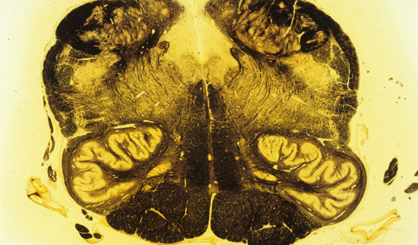
 The external cuneate nucleus lies just medial to the dark inferior cerebellar peduncle at the
dorsolateral corner of the rostral hindbrain.
The inferior olive is a large, folded nucleus in the rostral half of the caudal hindbrain.
The inferior olive forms a distinctive bulge on the ventral surface of the hindbrain, lateral
to the pyramid.
Axons of inferior olive cells travel to the opposite cerebellar hemisphere via the inferior cere-
bellar peduncle, where they provide timing signals for coordination of movement.
The basilar pontine nuclei constitute the largest group of neurons in the human brain stem.
They receive input from the cerebral cortex and send their axons to the opposite cerebellar
hemisphere. The fibers leaving the pontine nuclei form the middle cerebellar peduncle. The
pontine nuclei and the crossing pontocerebellar fibers form a massive bulge which covers
most of the rostral hindbrain, seen in images in the section above.
SECTIONS OF THE ROSTRAL HINDBRAIN SHOWING THE PONTINE EXPANSION
Next, we will examine sections of the rostral hindbrain, where the dominant feature is the
pontine expansion. The most useful landmark in identifying the level of these sections is the
fourth ventricle. The fourth ventricle is widest at the caudal end of the pontine expansion, and
it becomes progressively narrow as it approaches the midbrain, where it forms the tube-like
aqueduct.
Cerebrospinal fluid from the ventricles of the forebrain travels down the aqueduct to reach the
fourth ventricle. The fluid escapes through holes in the roof of the fourth ventricle to reach the
subarachnoid space.
Sections through the pontine expansion look very different from those at the level of the infe-
rior olive because they are dominated by the huge pontine nuclei and crossing pontine fibers.
However, some features are continuations of structures observed in the caudal hindbrain.
Examine the following image to identify these features:
-the fibers that form the pyramid are here swallowed up by the pontine nuclei and
crossing fibers, but they still form a distinct bundle. However, it is not called the pyra-
mid here; instead, these fibers are referred to as the longitudinal fibers of the pons,
which are made up of corticospinal and corticopontine fibers.
-the fibers of the medial lemniscus are still present, but they no longer lie vertically;
they are forced to assume a horizontal position, sitting above the pontine expansion.
-the fourth ventricle separates the longitudinal part of the hindbrain from the cerebel-
lum. The cerebellum forms the roof of the rostral half of the fourth ventricle
-the inferior cerebellar peduncle is still present, but it has moved dorsally to enter the
cerebellum, lying lateral to the fourth ventricle.
A dominant feature of this section is the middle cerebellar peduncle, but it has been cut just
before it enters the cerebellum. On the left-hand side of this image, you can see the fibers of
the trigeminal nerve as they travel through the middle cerebellar peduncle to reach the sur-
face.
The next image shows a section through the rostral end of the pontine expansion. It shows
some features that were seen in the lower section but has some other distinctive features.
27
28
The external cuneate nucleus lies just medial to the dark inferior cerebellar peduncle at the
dorsolateral corner of the rostral hindbrain.
The inferior olive is a large, folded nucleus in the rostral half of the caudal hindbrain.
The inferior olive forms a distinctive bulge on the ventral surface of the hindbrain, lateral
to the pyramid.
Axons of inferior olive cells travel to the opposite cerebellar hemisphere via the inferior cere-
bellar peduncle, where they provide timing signals for coordination of movement.
The basilar pontine nuclei constitute the largest group of neurons in the human brain stem.
They receive input from the cerebral cortex and send their axons to the opposite cerebellar
hemisphere. The fibers leaving the pontine nuclei form the middle cerebellar peduncle. The
pontine nuclei and the crossing pontocerebellar fibers form a massive bulge which covers
most of the rostral hindbrain, seen in images in the section above.
SECTIONS OF THE ROSTRAL HINDBRAIN SHOWING THE PONTINE EXPANSION
Next, we will examine sections of the rostral hindbrain, where the dominant feature is the
pontine expansion. The most useful landmark in identifying the level of these sections is the
fourth ventricle. The fourth ventricle is widest at the caudal end of the pontine expansion, and
it becomes progressively narrow as it approaches the midbrain, where it forms the tube-like
aqueduct.
Cerebrospinal fluid from the ventricles of the forebrain travels down the aqueduct to reach the
fourth ventricle. The fluid escapes through holes in the roof of the fourth ventricle to reach the
subarachnoid space.
Sections through the pontine expansion look very different from those at the level of the infe-
rior olive because they are dominated by the huge pontine nuclei and crossing pontine fibers.
However, some features are continuations of structures observed in the caudal hindbrain.
Examine the following image to identify these features:
-the fibers that form the pyramid are here swallowed up by the pontine nuclei and
crossing fibers, but they still form a distinct bundle. However, it is not called the pyra-
mid here; instead, these fibers are referred to as the longitudinal fibers of the pons,
which are made up of corticospinal and corticopontine fibers.
-the fibers of the medial lemniscus are still present, but they no longer lie vertically;
they are forced to assume a horizontal position, sitting above the pontine expansion.
-the fourth ventricle separates the longitudinal part of the hindbrain from the cerebel-
lum. The cerebellum forms the roof of the rostral half of the fourth ventricle
-the inferior cerebellar peduncle is still present, but it has moved dorsally to enter the
cerebellum, lying lateral to the fourth ventricle.
A dominant feature of this section is the middle cerebellar peduncle, but it has been cut just
before it enters the cerebellum. On the left-hand side of this image, you can see the fibers of
the trigeminal nerve as they travel through the middle cerebellar peduncle to reach the sur-
face.
The next image shows a section through the rostral end of the pontine expansion. It shows
some features that were seen in the lower section but has some other distinctive features.
27
28

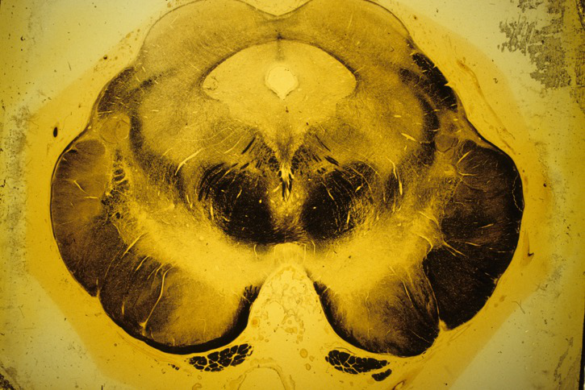
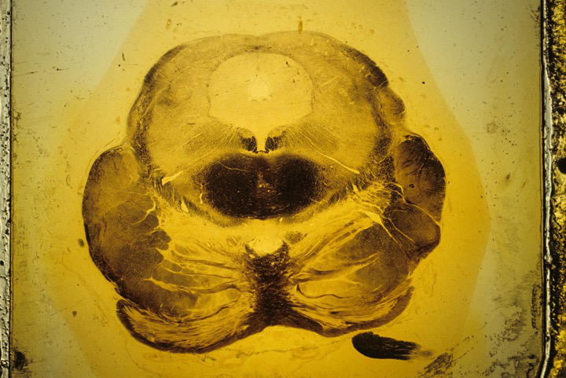
A section through the rostral hindbrain showing the decussation of the superior cerebellar
peduncles.
-the corticospinal and corticopontine fibers (longitudinal fibers of the pons) form a
prominent bundle in the center of the basilar pontine formation
-the medial lemniscus still lies dorsal to the basilar pons, but it has moved away from
the midline
-the middle cerebellar peduncle is not seen here because it has left the brain stem to
enter the cerebellum
-the fourth ventricle has shrunk down to a small tube that is about to become the aque-
duct of the midbrain.
An entirely new feature of this section is the appearance of the superior cerebellar peduncle,
which is a very prominent fiber group just dorsal to the medial lemniscus -. This peduncle
consists of fibers that have left the cerebellum and are heading toward their termination in the
thalamus. At this level, the superior cerebellar peduncle is crossing the midline – the crossing
is therefor called the decussation of the superior cerebellar peduncle. This crossing is an im-
portant landmark because it occurs in the most rostral segment of the hindbrain (the isthmus).
SECTIONS THROUGH THE MIDBRAIN
The next image is a section through the caudal midbrain. It is particularly interesting because
this part of the midbrain overlaps the isthmus and the rostral part of the basilar pontine forma-
tion. The dorsal part of the section is at the caudal part of the inferior colliculus of the mId-
brain, but the middle of the section shows features of the most rostral segment of the hind-
brain – the decussation of the superior cerebellar peduncle and the nucleus of the trochlear
nerve.
A section through the caudal midbrain, showing the overlap with rostral hindbrain struc-
tures – the decussation of the superior cerebellar peduncles and the rostral pontine nuclei.
The most ventral part of the section cuts through the most rostral part of the basilar pontine
formation. Lateral to the crossing pontine fibers is a very large fiber bundle formed by the cor-
ticospinal and corticopontine fibers. This bundle is called the cerebral peduncle (crus cerebri).
The next section is exclusively a midbrain section at the level of the superior colliculus. In the
center is the aqueduct, which is surrounded by the pale periaqueductal gray matter. Above the
periaqueductal gray are the two superior colliculi, which have a characteristically laminated
appearance.
A section through the superior colliculus of the midbrain.
Below the periaqueductal gray are two dark round masses. They contain the fibers of the su-
perior cerebellar peduncle, which is ascending toward the thalamus. However, this region co-
29
30
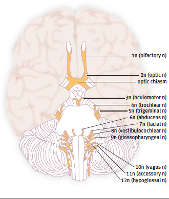
incides with the location of large cells of the red nucleus, a cell group that gives rise to the de-
scending rubrospinal tract. The appearance of the cells is obscured by the fibers of the supe-
rior cerebellar peduncle.
Lateral to the red nucleus, at the lateral edge of the midbrain, is the very large cerebral pedun-
cle, which contains corticospinal and corticopontine fibers that are heading towards the hind-
brain. On the inner margin of the dark cerebral peduncle is an extensive pale area called the
substantia nigra. The reason for the apparently contradictory name is that in fresh brain speci-
mens, the area is stained black by iron deposits. Some of the cells of the substantia nigra con-
tain dopamine, and which project to motor centers in the forebrain.
Between the red nucleus (superior cerebellar peduncle) and the cerebral peduncle is the elon-
gated medial lemniscus, which has been pushed laterally.
An important feature of this section is the presence of streaks of fibers that start from under
the periaqueductal gray and which course through the red nucleus. These are fibers of the ocu-
lomotor nerve, which are heading to their point of emergence between the two cerebral pe-
duncles (this space is called the interpeduncular fossa).
Questions for repetition
-
What is the difference between the spinal cord and the caudal end of the hindbrain?
-
In which sensory pathways are the superior and inferior colliculi involved?
-
What are the names of the three large nuclei that project from the hindbrain into the cere-
bellum?
-
What is the name of the part of the hindbrain that is most rostrally located?
The brain stem cranial nerves
Cranial nerves 1 and 2 (the olfactory and optic nerves) are connected with the forebrain. The
remaining ten cranial nerves (cranial nerves 3 to 12) arise from the brain stem.
The ventral surface of the human brain showing the origins of the cranial nerves.
The oculomotor nerve (3n) emerges out of the interpeduncular fossa from the ventral surface
of the midbrain. The trochlear nerve (4n) winds around the cerebral peduncle after exiting the
dorsal surface of the isthmus (the most rostral segment of the hindbrain). The trigeminal nerve
emerges from the basilar pons. The trigeminal nerve (5n) is made up of two parts, a large sen-
sory root, and a smaller motor root. The abducens nerve (6n) emerges from the caudal border
of the pons. The facial nerve (7n) and the vestibulocochlear nerve (8n) leave the hindbrain
from the lateral part of the trapezoid body. The rootlets of the glossopharyngeal nerve (9n),
vagus nerve (10n), and accessory nerve (11n) form a line at the lateral margin of the caudal
hindbrain. The rootlets of the hypoglossal nerve emerge from the lateral border of the pyra-
mid.
Cranial nerve 3 – the oculomotor nerve
The paired oculomotor nuclei are found at the level of the superior colliculus, close to the
midline, and ventral to the periaqueductal grey matter.
The fibers of the oculomotor nerve course through the red nucleus on their way to the interpe-
duncular fossa. The main oculomotor nucleus contains somatic motor neurons that supply all
the eye muscles except the superior oblique and the lateral rectus muscles. The smaller
Edinger–Westphal nucleus contains preganglionic parasympathetic neurons that supply the
constrictor of the pupil and the ciliary muscle. Damage to the oculomotor nerve results in a di-
vergent squint (the eye on the paralyzed side is pulled laterally and downwards away from the
line of vision), drooping of the eyelid (ptosis – due to partial paralysis of the eyelid raising
muscle), and dilatation of the pupil.
31
32
 Paralysis of the right oculomotor nerve – divergent squint, dilated pupil, and drooping eye-
lid.
Cranial nerve 4 – the trochlear nerve
The trochlear nucleus is located immediately caudal to the oculomotor complex dorsolateral
to the medial longitudinal fasciculus. While the trochlear nucleus was traditionally thought to
be located in the midbrain, it is now clear that it belongs to the most rostral segment of the
hindbrain, called the isthmus. The small trochlear nerve exits the dorsal surface of the brain-
stem. It crosses the midline in the superior medullary velum before winding around the cere-
bral peduncle to supply the superior oblique muscle of the eye.
Cranial nerve 5 – the trigeminal nerve
The trigeminal nerve supplies the skin of the face and the muscles of mastication (the chewing
muscles). The sensory fibers of the trigeminal nerve connect to a series of large nuclei extend-
ing from the rostral hindbrain to the spinal cord. The principal sensory trigeminal nucleus is
found at the level where the trigeminal nerve connects with the hindbrain. The trigeminal mo-
tor nucleus lies medial to the principal sensory nucleus. The two remaining nuclei of the
trigeminal complex are the spinal (descending) and mesencephalic nuclei. The spinal nucleus
is found in the dorsolateral hindbrain at all levels below the principal nucleus and is continu-
ous caudally with the substantia gelatinosa of the spinal cord. The mesencephalic nucleus of
the trigeminal system is small and difficult to see in low power sections. It consists of a single
layer of large round cells on the edge of the periaqueductal gray matter of the midbrain.
Cranial nerve 6 – the abducens nerve
The abducens nerve supplies the lateral rectus muscle of the eye. The abducens nucleus lies
next to the midline close to the medial longitudinal fasciculus. The fibers of the emerging ab-
ducens nerve can be seen running dorsoventrally through the tegmentum of the hindbrain.
Cranial nerve 7 – the facial nerve
The facial nerve supplies the muscles of the face. It also supplies taste sensory fibers to the
front of the tongue and parasympathetic fibers to the submandibular salivary gland and other
small glands in the head. The motor fibers leaving the main facial nucleus take an unusual
course through the hindbrain. They travel dorsomedially to curl around the abducens nucleus
before heading ventrolaterally to exit the brainstem ventral to the trigeminal sensory nucleus.
Taste fibers in the facial nerve connect with the nucleus of the solitary tract.
Cranial nerve 8 – the vestibulocochlear nerve
The vestibulocochlear nerve receives sensory fibers from the organs of balance (mainly the
semicircular canals) and hearing (the cochlea). In a transverse section of the junction of the
pons and medulla, the vestibulocochlear nerve enters the brainstem as two separate bundles,
which straddle the inferior cerebellar peduncle. Those entering ventral to the peduncle are the
vestibular fibers, while those seen dorsal and lateral to the peduncle are the cochlear fibers.
The dorsal and ventral cochlear nuclei are pale areas embedded within the fibers of the
cochlear nerve as is arches around the peduncle. The dorsal cochlear nucleus is the more
prominent of the two; it is easily recognizable in sections as it surmounts the inferior cerebel-
lar peduncle. Four nuclei comprise the vestibular nuclear complex. They are named superior,
lateral, medial, and spinal (descending) vestibular nuclei. These four nuclei are arranged
within a diamond-shaped area in the floor of the fourth ventricle.
Cranial nerve 9 – the glossopharyngeal nerve
The glossopharyngeal nerve receives taste fibers from the posterior third of the tongue, which
terminates in the nucleus of the solitary tract. The glossopharyngeal nerve contains parasym-
pathetic fibers that supply the parotid salivary gland, and which arise in the inferior salivatory
nucleus. It also supplies a single pharyngeal muscle, the palatoglossus, with fibers that arise in
the nucleus ambiguous.
Cranial nerve 10 – the vagus nerve
The vagus nerve supplies parasympathetic fibers to the thoracic and abdominal viscera. The
parasympathetic nucleus of the vagus (the dorsal motor nucleus of the vagus) lies just medial
to the sulcus limitans in sections of the open medulla. The nucleus of the solitary tract lies just
lateral to the dorsal motor nucleus of the vagus. It receives taste fibers from the facial, glos-
sopharyngeal and vagus nerves, and general visceral afferent fibers from the vagus nerve. The
nucleus ambiguous contains large multipolar motor neurons, which supply the pharynx,
palate, and larynx muscles via the vagus, cranial accessory, and glossopharyngeal nerves.
Cranial nerve 11 – the accessory nerve
The cranial part of the accessory nerve arises from the nucleus ambiguous and is considered
by many to be just a part of the vagus nerve. It contributes to the vagal supply of the pharynx.
The spinal root of the accessory nerve is a motor nerve supplying sternomastoid and trapezius
muscles in the neck. It arises from motoneurons in cervical spinal cord levels C2 to C4. It
travels into the cranial cavity to join briefly with the vagus nerve before descending into the
posterior triangle of the neck.
Cranial nerve 12 – the hypoglossal nerve
The hypoglossal nerve supplies the muscles of the tongue. The hypoglossal nucleus lies im-
mediately dorsal to the medial longitudinal fasciculus and is medial to the dorsal motor nu-
cleus of the vagus in the floor of the fourth ventricle. The hypoglossal nerve fibers travel ven-
trally to emerge between the inferior olive and pyramid.
Functional classification of motor and sensory nerve fibers
The fibers that travel in the cranial nerves can be classified on the basis of their functions.
Efferent (motor) fibers are classified as either somatic efferent, visceral efferent, or branchial
efferent.
Afferent (sensory) fibers are classified as somatic sensory, visceral sensory, or special sensory.
The following table summarises the functional components of each of the cranial nerves
33
34
Paralysis of the right oculomotor nerve – divergent squint, dilated pupil, and drooping eye-
lid.
Cranial nerve 4 – the trochlear nerve
The trochlear nucleus is located immediately caudal to the oculomotor complex dorsolateral
to the medial longitudinal fasciculus. While the trochlear nucleus was traditionally thought to
be located in the midbrain, it is now clear that it belongs to the most rostral segment of the
hindbrain, called the isthmus. The small trochlear nerve exits the dorsal surface of the brain-
stem. It crosses the midline in the superior medullary velum before winding around the cere-
bral peduncle to supply the superior oblique muscle of the eye.
Cranial nerve 5 – the trigeminal nerve
The trigeminal nerve supplies the skin of the face and the muscles of mastication (the chewing
muscles). The sensory fibers of the trigeminal nerve connect to a series of large nuclei extend-
ing from the rostral hindbrain to the spinal cord. The principal sensory trigeminal nucleus is
found at the level where the trigeminal nerve connects with the hindbrain. The trigeminal mo-
tor nucleus lies medial to the principal sensory nucleus. The two remaining nuclei of the
trigeminal complex are the spinal (descending) and mesencephalic nuclei. The spinal nucleus
is found in the dorsolateral hindbrain at all levels below the principal nucleus and is continu-
ous caudally with the substantia gelatinosa of the spinal cord. The mesencephalic nucleus of
the trigeminal system is small and difficult to see in low power sections. It consists of a single
layer of large round cells on the edge of the periaqueductal gray matter of the midbrain.
Cranial nerve 6 – the abducens nerve
The abducens nerve supplies the lateral rectus muscle of the eye. The abducens nucleus lies
next to the midline close to the medial longitudinal fasciculus. The fibers of the emerging ab-
ducens nerve can be seen running dorsoventrally through the tegmentum of the hindbrain.
Cranial nerve 7 – the facial nerve
The facial nerve supplies the muscles of the face. It also supplies taste sensory fibers to the
front of the tongue and parasympathetic fibers to the submandibular salivary gland and other
small glands in the head. The motor fibers leaving the main facial nucleus take an unusual
course through the hindbrain. They travel dorsomedially to curl around the abducens nucleus
before heading ventrolaterally to exit the brainstem ventral to the trigeminal sensory nucleus.
Taste fibers in the facial nerve connect with the nucleus of the solitary tract.
Cranial nerve 8 – the vestibulocochlear nerve
The vestibulocochlear nerve receives sensory fibers from the organs of balance (mainly the
semicircular canals) and hearing (the cochlea). In a transverse section of the junction of the
pons and medulla, the vestibulocochlear nerve enters the brainstem as two separate bundles,
which straddle the inferior cerebellar peduncle. Those entering ventral to the peduncle are the
vestibular fibers, while those seen dorsal and lateral to the peduncle are the cochlear fibers.
The dorsal and ventral cochlear nuclei are pale areas embedded within the fibers of the
cochlear nerve as is arches around the peduncle. The dorsal cochlear nucleus is the more
prominent of the two; it is easily recognizable in sections as it surmounts the inferior cerebel-
lar peduncle. Four nuclei comprise the vestibular nuclear complex. They are named superior,
lateral, medial, and spinal (descending) vestibular nuclei. These four nuclei are arranged
within a diamond-shaped area in the floor of the fourth ventricle.
Cranial nerve 9 – the glossopharyngeal nerve
The glossopharyngeal nerve receives taste fibers from the posterior third of the tongue, which
terminates in the nucleus of the solitary tract. The glossopharyngeal nerve contains parasym-
pathetic fibers that supply the parotid salivary gland, and which arise in the inferior salivatory
nucleus. It also supplies a single pharyngeal muscle, the palatoglossus, with fibers that arise in
the nucleus ambiguous.
Cranial nerve 10 – the vagus nerve
The vagus nerve supplies parasympathetic fibers to the thoracic and abdominal viscera. The
parasympathetic nucleus of the vagus (the dorsal motor nucleus of the vagus) lies just medial
to the sulcus limitans in sections of the open medulla. The nucleus of the solitary tract lies just
lateral to the dorsal motor nucleus of the vagus. It receives taste fibers from the facial, glos-
sopharyngeal and vagus nerves, and general visceral afferent fibers from the vagus nerve. The
nucleus ambiguous contains large multipolar motor neurons, which supply the pharynx,
palate, and larynx muscles via the vagus, cranial accessory, and glossopharyngeal nerves.
Cranial nerve 11 – the accessory nerve
The cranial part of the accessory nerve arises from the nucleus ambiguous and is considered
by many to be just a part of the vagus nerve. It contributes to the vagal supply of the pharynx.
The spinal root of the accessory nerve is a motor nerve supplying sternomastoid and trapezius
muscles in the neck. It arises from motoneurons in cervical spinal cord levels C2 to C4. It
travels into the cranial cavity to join briefly with the vagus nerve before descending into the
posterior triangle of the neck.
Cranial nerve 12 – the hypoglossal nerve
The hypoglossal nerve supplies the muscles of the tongue. The hypoglossal nucleus lies im-
mediately dorsal to the medial longitudinal fasciculus and is medial to the dorsal motor nu-
cleus of the vagus in the floor of the fourth ventricle. The hypoglossal nerve fibers travel ven-
trally to emerge between the inferior olive and pyramid.
Functional classification of motor and sensory nerve fibers
The fibers that travel in the cranial nerves can be classified on the basis of their functions.
Efferent (motor) fibers are classified as either somatic efferent, visceral efferent, or branchial
efferent.
Afferent (sensory) fibers are classified as somatic sensory, visceral sensory, or special sensory.
The following table summarises the functional components of each of the cranial nerves
33
34

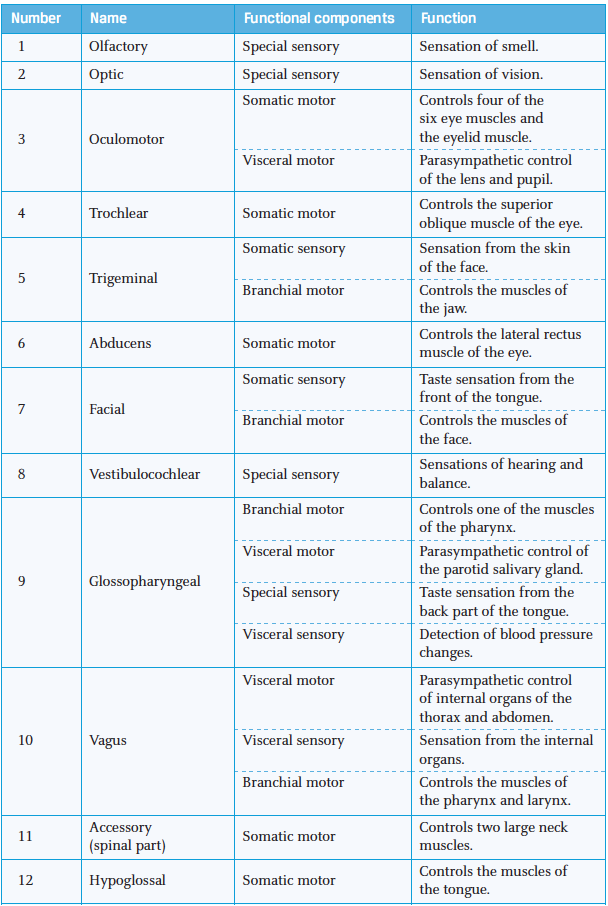
Questions for repetition
-
Which cranial nerves are connected to the brain stem?
-
Name the consequences of paralysis of the third cranial nerve.
-
What is the fifth cranial nerve also called?
-
What is the function of the sixth cranial nerve?
-
What do the parasympathetic fibers of the glossopharyngeal nerve innervate?
-
How many functional components does the eleventh cranial nerve have?
The cerebellum
The cerebellum is an outgrowth of the rostral hindbrain, arising from the region just caudal to
the midbrain (the isthmus and the first rhombomere). The developing cerebellum is relatively
small at birth, but it grows rapidly in the postnatal period.
The central white matter of the cerebellum is arranged like the trunk of a tree, with a series of
major branches covered with grey matter. In a mid–sagittal section, the cerebellum looks like
a slice of cauliflower, with branches of white matter forming the major lobules of the central
part of the cerebellum. The part of the cerebellum in the midline is called the vermis. The ver-
mis consists of ten recognizable lobules in all mammals.
The cerebral cortex relies on the cerebellum for the coordination of movement. The cerebral
cortex requests information from the cerebellum via the huge corticopontine pathway that
travels to the rostral hindbrain and which synapses in the pontine nuclei. The pontine nuclei
send their axons to the opposite side of the cerebellum via the middle cerebellar peduncle.
The cerebellum responds to requests from the forebrain via the superior cerebellar peduncle,
which travels to the ventrolateral thalamic nucleus of the opposite side. The inferior cerebellar
peduncle carries fibers that arise in the spinal cord and brainstem on their way to the cerebel-
lar cortex.
The dorsal spinocerebellar tract and the pathways connecting the cerebellum, thalamus,
motor cortex, and pons.
35
36
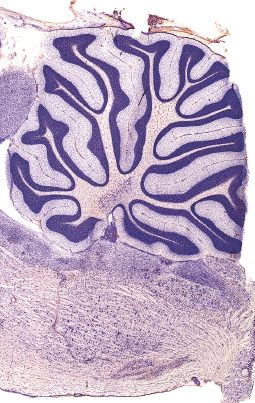
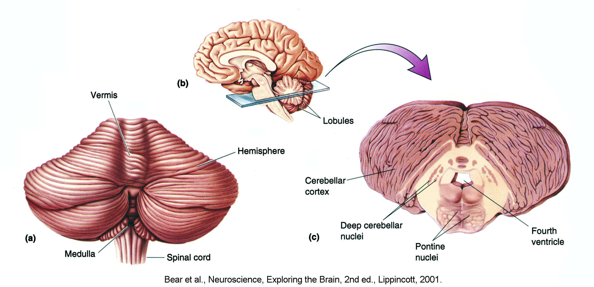
Lobules of the cerebellar vermis and the cerebellar hemisphere
The vermis of the cerebellum in all mammals is divided into ten lobules by a series of deep
fissures. The largest of these fissures is the primary fissure, which divides the anterior vermis
(lobules 1-5) from the posterior vermis (lobules 6-10). Each of the lobules has a traditional
Latin name, but the only one worth remembering is the nodule, which is the name for lobule
10. The human cerebellar hemisphere is extraordinarily elaborate, marked by hundreds of in-
dividual folia that run from medial to lateral.
A sagittal section of rat cerebellum showing the ten lobules of the vermis. The deep primary
fissure separates lobules 1-5 (on the left) from lobules 6-10 (on the right).
The center of the cerebellum is filled with fibers – called the deep cerebellar white matter.
Embedded in the white matter are three deep cerebellar nuclei on each side. The largest of
these nuclei is the dentate nucleus, which is laterally placed.
Cerebellar peduncles
The cerebellum is connected to the hindbrain by three cerebellar peduncles on each side: the
inferior peduncle mainly contains fibers entering the cerebellum from the spinal cord and the
inferior olive; the huge middle peduncle contains fiber projecting from the basilar pons to the
cerebellum; the superior peduncle contains fibers that leave the cerebellum to travel through
the red nucleus to reach the thalamus.
A diagram of the human cerebellum showing the vermis and the hemispheres (a) and the
deep cerebellar nuclei (c).
The cerebellum has an ipsilateral connection with the body
Each side of the cerebral cortex is connected to sensory and motor activities on the opposite
side of the body, but each side of the cerebellum is connected to the same side of the body.
When one cerebellar hemisphere is damaged, the classic symptoms of cerebellar damage,
which are incoordination of voluntary movement and tremor, occur on the same side as the
damage.
(a) A sagittal section
The role of the cerebellum in motor control
The cerebellum is responsible for the coordination of complex movements. It does this by
comparing the motor commands with the actual body movements that result. On the basis of
this comparison, it can adjust motor control to improve accuracy. This monitoring and feed-
back occur in real-time and is most important at the crucial end stages of a purposeful move-
ment. The cerebellum plays a vital role in the management of posture and balance; it receives
input from the vestibular system so that it can monitor the position of the body in space, and it
can make major postural adjustments if the person is in danger of losing their balance.
In primates, the cerebellum is vital for coordinating the movements of the hands and eyes. For
monkeys, life in the trees depends entirely on the ability to plan and execute acrobatic leaps
involving the cerebellum, vestibular system, eyes, and hands. Humans have the most sophisti-
cated version of binocular vision among the primates and have long fingers and opposable
thumbs. The human cerebellum has evolved to capitalize on these capacities through the pre-
cise coordination of skilled finger movements. The fine coordination of finger movement un-
der the control of binocular vision has given humans access to tool manufacture.
The histological structure of the cerebellar cortex
the cerebellar cortex is made up of three layers, the outer molecular layer, the Purkinje cell
layer, and the inner granule cell layer. Deep to the granule cell layer is the deep cerebellar
white matter.
The structure of the cerebellar cortex is extraordinarily uniform; the same three layers are
seen in all parts of the cerebellum, and their relative thickness does not vary. Deep to the cor-
tex is the deep cerebellar white matter.
The large Purkinje cells are the output cells of the cerebellar cortex. Their axons project to the
cerebellar nuclei.
37
38
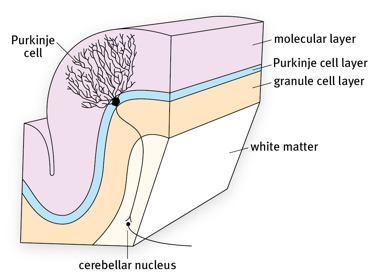
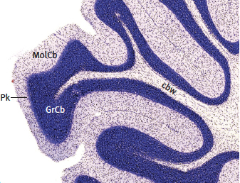
Cerebellar cortex. The Nissl stained section above shows the molecular layer (MoCb), the
Purkinje cell layer (Pk), the granule cell layer (GrCb), and the deep cerebellar white matter
(cbw). The diagram below shows the dendritic tree of a Purkinje cell in the molecular layer
and the termination of the Purkinje cell axon in a deep cerebellar nucleus.
Mossy fibers and climbing fibers
Most of the fibers projecting to the cerebellar cortex are mossy fibers that synapse with gran-
ule cells. The exception is the input from the inferior olive, which goes directly to the den-
dritic trees of the Purkinje cells in the form of climbing fibers. The mossy fibers arise from
cells in the pontine nuclei and other large precerebellar nuclei in the hindbrain and from the
spinal cord. The granule cells send their axons to the dendrites of Purkinje cells. The granule
cells are tiny but very tightly packed - about one million per cubic millimeter; the granule
cells comprise about 70 % of all the neurons in the brain. As noted above, the axons from the
inferior olivary nucleus form climbing fibers, which make direct contact with the dendritic
trees of the Purkinje cells. There is evidence that the inferior olivary cells control the time
code of the cerebellum, thus ensuring that every learned movement is played back in exactly
the right timing sequence—the inferior olive cells fire at about 10 Hz (ten action potentials per
second).
Microelectrode recordings in the rat suggest that every folium in the cerebellum codes a dif-
ferent movement sequence. For example, some are concerned with taking food with the fin-
gers and transferring it to the mouth, and others are involved in running behavior. Given the
tens of thousands of folia in the human cerebellum, it is possible that the cerebellum keeps
learning new movement sequences into adult life. Perhaps there is even a backhand folium in
keen tennis players!
The largest connection of the human cerebellum is the connection with the motor cortex. The
huge corticopontine pathway arises from the cerebral cortex, synapses in the pons, and enters
the cerebellum through the middle cerebellar peduncle. This seems to be a way for the motor
cortex to ask for help from the cerebellum when coordination of a complex movement is re-
quired. The answer comes back to the motor cortex via the superior cerebellar peduncle. The
fibers of the superior cerebellar peduncle synapse in the ventrolateral nucleus of the thalamus,
and the thalamocortical fibers travel to the motor cortex.
The relationship between cell numbers in the cerebral cortex and the cerebellum is very con-
sistent across the mammalian groups. Although the size of the cerebral cortex varies a great
deal from one mammalian family to another, the proportional relationship between the num-
ber of cerebral cortical cells and the number of cerebellar cells is the same–about 1:4.
The main way the cerebellum tracks movement in the limbs is from sensations from the skin.
It used to be thought that the most important information on movement would come from
joint receptors and muscle stretch receptors, but it now appears that most of the input comes
from receptors that detect sensations of stretching, contact, or folding in the skin. These sensa-
tions provide very fine detail on the movement of the limbs and other body parts.
Questions for repetition
-
Of how many layers is the cortex of the cerebellum constituted?
-
Is the cerebellum also connected "side-wise inverted" with the muscles of the other half of
the body?
-
To which cells do the granule cells send their axon potentials?
-
How can the cerebellum coordinate the correct timing of movement signals?
-
What are classic symptoms of damage to the cerebellum?
39
40
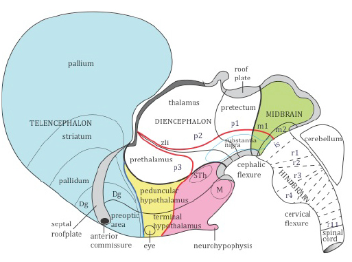
DIENCEPHALON
The diencephalon
The diencephalon sits between the midbrain and the hypothalamus. The central part of the di-
encephalon is the thalamus. The other parts of the diencephalon are the prethalamus in front
of the thalamus and the pretectal area behind. Each of the three parts of the diencephalon is a
complete segment of the neural tube, with alar and basal components, called the diencephalic
prosomeres: the pretectal area is included in diencephalic prosomere 1; the thalamic area is in-
cluded in diencephalic prosomere 2; the prethalamus is included in diencephalic prosomere 3.
The word ‘diencephalon’ means ‘interbrain’–referring to the fact that this region links the
main parts of the forebrain with the brainstem.
A diagram showing the segmental components of the developing brain. The diencephalic
segments p1, p2, and p3 are shown. Note the habenular stalk at the caudal end of the dorsal
surface of the thalamus.
Thalamus
In a mid-sagittal section of the brain, the thalamus sits dorsal to the hypothalamus. This led to
a long-held misunderstanding that the hypothalamus is actually ventral to the thalamus in
topological terms. However, the relationship between the two is not as it seems. Because of
the sharp (almost 180 degrees) bending of the neuraxis at the midbrain during development
(the cephalic flexure), the hypothalamus is actually rostral to the diencephalon in develop-
mental terms.
The thalamus receives input from all the sensory systems except the olfactory system. Each of
the visual, auditory, and touch (somatosensory) sensory pathways terminates in its own spe-
cial part of the thalamus: the visual pathway ends in the dorsal lateral geniculate nucleus; the
auditory pathway ends in the medial geniculate nucleus; the touch pathway ends in the ventro-
posterior nucleus. Each of these sensory thalamic nuclei then sends sensory information to the
cortical area reserved for that modality. In addition, information on movement coordination
from the cerebellum also reaches the ventrolateral nucleus of the thalamus, and the informa-
tion is sent on to the part of the cortex concerned with motor control – the primary motor cor-
tex.
It is not necessary to memorize the names of all the thalamic nuclei; the key ones are the nu-
clei that connect to the main sensory pathways–ventroposterior (VP, somatosensory), dorsal
lateral geniculate (DLG, vision), and medial geniculate (MG, hearing), to which should be
added the ventrolateral nucleus (VL), which receives input from the cerebellum and globus
pallidus and projects to the motor cortex. The remaining thalamic nuclei project to association
areas of the cerebral cortex.
The dorsomedial edge of the thalamus carries the habenular nuclei, to which are attached the
stalk of the pineal gland. The pineal gland secretes melatonin, which influences the sleep cy-
cle.
Prethalamus
The most rostral diencephalic prosomere (p3) contains the zona incerta – an important region
for motor control. In Parkinson’s disease, stimulating electrodes that are inserted into the zona
incerta can minimize tremors and muscle stiffness in patients with Parkinsonism. This is
called deep brain stimulation (DBS), and the treatment is usually very successful. The reticu-
lar nuclei of p3 play an important role during sleep by controlling the output of the thalamus
to the cortex. After sleep is established, the inhibitory (GABAergic) neurons of p3 take con-
trol of the activity of the main thalamic nuclei to set up a rhythmic wave pattern of electrical
activity in the cortex.
Pretectal area
The most caudal diencephalic prosomere (p1) contains the nuclei of the pretectal area. These
nuclei play a role in visual reflexes. A prominent p1 landmark at the junction of the prethala-
mus with the midbrain is the posterior commissure, which belongs to p1 and not to the mid-
brain, as previously supposed.
Questions for repetition
-
Of what parts does the diencephalon consist of?
-
Describe the spatial relationship of the thalamus and hypothalamus from a developmental
perspective?
-
Which thalamic nucleus is integrated into the visual pathway?
-
Which part of the diencephalon is stimulated with deep brain stimulation to combat
Parkinsonism?
-
In which function is the pretectal area involved?
41
42
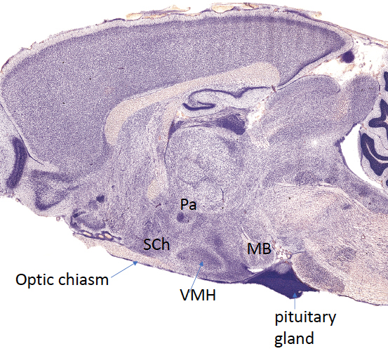
A sagittal section of the rat brain showing the main parts of the hypothalamus.
The pituitary stalk is attached close to VMH.
MB=mammillary body; Pa=paraventricular nucleus; SCh=suprachiasmatic nucleus;
VMH=ventromedial hypothalamic nucleus.
HYPOTHALAMUS
The hypothalamus
The name 'hypothalamus' is derived from an outdated view that the hypothalamus was simply
a ventral addition to the thalamus. New data from developmental gene expression has re-
vealed a far more critical role for the hypothalamus. It is now clear that the hypothalamus is
formed from the most rostral part of the neural tube, and it is responsible for generating the
whole of the telencephalon from its alar plate. It is by far the most crucial center in the devel-
oping human brain.
One of the reasons for misunderstanding the proper anatomical place of the hypothalamus is a
lack of appreciation of the effect of the cervical flexure of the developing neural tube. This se-
vere bend in the embryonic neuraxis pushes the hypothalamus to its adult position under the
thalamus.
The hypothalamus comprises the first two neural segments – the terminal prosomere and the
peduncular prosomere. The terminal hypothalamic prosomere gives rise to the eye and the te-
lencephalon from its alar plate, giving rise to the posterior pituitary gland from its basal plate.
The peduncular hypothalamic prosomere is connected to prosomere 3 of the diencephalon
Features of the hypothalamus seen in a mid-sagittal section
In a mid-sagittal section of the brain, the prominent anatomical landmarks of the hypothala-
mus can be seen – the optic chiasm rostrally, the mammillary bodies caudally, and the pitu-
itary stalk between the two.
The most rostral part of the hypothalamus sits above the optic chiasm. The hypothalamic nu-
cleus sitting immediately above the chiasm is appropriately called the suprachiasmatic nu-
cleus. This nucleus serves as a 24-hour clock for the brain; its neurons have an internal timing
system that can be adjusted with light intensity information from the optic nerves. If an ani-
mal is kept in complete darkness, the clock reverts to a 25-hour cycle. The clock is essential
for the timing of peaks of hormonal secretions from endocrine glands.
The central part of the hypothalamus that bears the pituitary stalk is called the tuber cinereum.
The hypothalamus and survival behaviors
During vertebrate evolution, complex behaviors and movement sets became organized in a hi-
erarchy of modules in the brain. At the top of the hierarchy are behaviors relating to the sur-
vival of the individual and the species. These include eating, drinking, defensive behaviors,
reproduction, and the basic movement patterns needed to explore the immediate environment.
These survival behaviors are primarily controlled by the hypothalamus. The hypothalamic
control centers for survival behaviors are clustered in two main groups. The first group in-
cludes systems for defense, reproduction, and ingestion (feeding and drinking). The nuclei
that control these behavior sets, including the large ventromedial nucleus, are located in the
medial half of the hypothalamus. Each specific behavior set, such as eating, is related to one
particular set of hypothalamic nuclei. The second group of survival behavior organizers is lo-
cated in the mammillary body in the caudal part of the hypothalamus and in nearby midbrain
parts (the substantia nigra and the ventral tegmental area). This second group initiates ex-
ploratory and foraging behaviors, such as turning the head and eyes toward an object of inter-
est and walking or running to explore the surroundings.
43
44
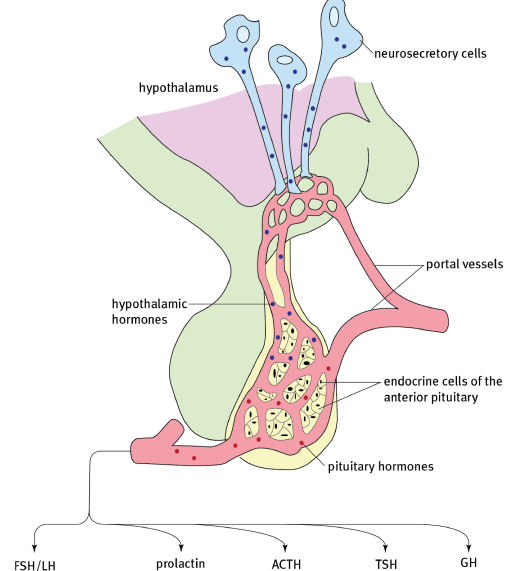
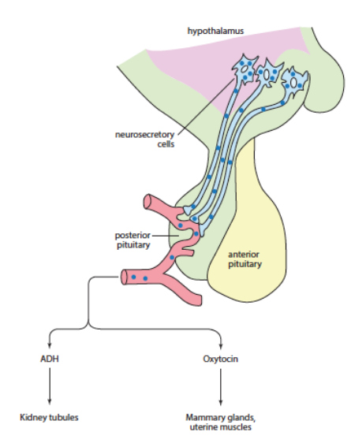
The control over the anterior pituitary is not as direct: cells in the paraventricular nucleus re-
lease tiny amounts of releasing hormones into a specialized portal blood system that carries
them to the anterior pituitary. A portal blood system has two sets of capillaries connected by a
portal vein. In the case of the pituitary, the first capillary bed collects the releasing hormones
from the hypothalamus. Small portal veins transport the releasing hormones to the second
capillary bed in the anterior pituitary, where they reach endocrine secreting cells. The releas-
ing hormones stimulate the release of the major hormones from anterior pituitary cells -
growth hormone (GH), thyroid-stimulating hormone (TSH), adrenocorticotrophic hormone
(ACTH), follicle-stimulating hormone (FSH), prolactin (PRL), and luteinizing hormone (LH).
The hypothalamus secretes releasing hormones which stimulate the endocrine cells of the
anterior pituitary to release their hormone products. The releasing hormones are delivered
to hypothalamic capillaries that drain into veins which form a special portal venous system.
The portal veins end in a second capillary system in the anterior pituitary.
Questions for repetition
-
From which prosomeres does the hypothalamus arise?
-
Which hypothalamic nucleus is responsible for determining the circadian rhythm?
-
Which hypothalamic structures are involved in behaviors such as foraging and explo-
ration?
-
What hormones are secreted in the posterior pituitary gland?
-
What kind of hormones are secreted in the anterior pituitary gland?
Control of the endocrine system by the hypothalamus
The hypothalamus has several powerful neuron groups that control the hormonal secretions of
the pituitary gland. Langdon-Brown famously described the pituitary gland as 'the leader in
the endocrine orchestra' (Hubble, 1961). This is a clever metaphor that reserves the role of the
conductor of the orchestra for the hypothalamus. In an orchestra, the conductor gives direc-
tions to the first violin, who is the orchestra's leader.
Hypothalamic control over the posterior pituitary is direct. Large neurosecretory cells in the
paraventricular and supraoptic nuclei send their axons to the posterior pituitary, releasing oxy-
tocin and vasopressin into the bloodstream. Oxytocin stimulates contraction of the uterus at
birth and initiates milk secretion after birth. It also plays an important role in adult pair-bond-
ing and maternal-infant attachment. Vasopressin, also called antidiuretic hormone (ADH), in-
creases blood pressure and controls urine production.
Hypothalamic secretion of the posterior pituitary hormones oxytocin and ADH (vaso-
pressin). The hormones are produced by neurosecretory cells in the paraventricular nu-
cleus and are released from axon terminals that reach the posterior pituitary.
45
46
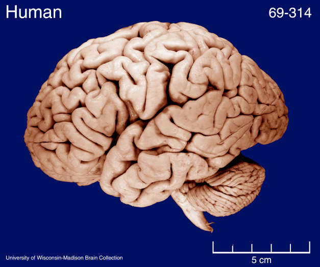
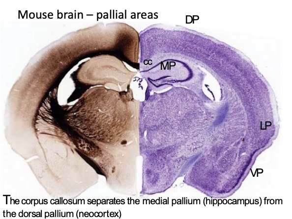
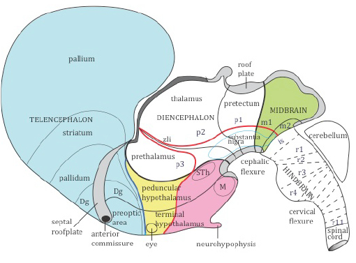
A coronal section through the forebrain of a mouse showing the four pallial areas – medial
pallium (MP), dorsal pallium (DP), lateral pallium (LP), and ventral pallium (VP). The
corpus callosum separates the medial pallium (hippocomapus) form the dorsal pallium
(neocortex).
The pattern of sulci and gyri varies from person to person, but some gyri can be consis-
tently identified.
Telencephalon
The Telencephalon
TELENCEPHALON – THE CEREBRAL HEMISPHERES
The two telencephalic outgrowths arise from the developing hypothalamus. The telencephalic
outgrowth on each side forms the cerebral hemisphere or cerebrum. The cerebral hemisphere
of each side consists of an outer layer or pallium and a subpallial layer. The pallium includes
the cortex. The subpallium forms several deep cell groups, the largest of which are the stria-
tum and pallidum (sometimes called the basal ganglia).
The two telencephalic outgrowths arise from the alar plate of the rostral hypothalamic seg-
ment. This diagram shows only one telencephalic outgrowth. The telencephalon forms the
pallium (the future cortex) and the subpallium (mainly the striatum and pallidum).
The pallium can be divided into medial, dorsal, lateral, and ventral. In mammals, most of the
cerebral cortex is derived from the dorsal pallium and is called the neocortex. The areas deriv-
ing from the ventral pallium mainly belong to the olfactory system. The olfactory cortex is
sometimes referred to as allocortex.
The smaller lateral pallium, which lies between the neocortex and the olfactory cortical areas,
forms a small area of the neocortex called the insula, which is mainly devoted to taste and vis-
ceral sensation. The medial pallial subdivision gives rise to the hippocampus.
Neocortex
The human neocortex is massively expanded. Folding increases its surface area, forming
raised areas (gyri) and grooves (sulci).
47
48
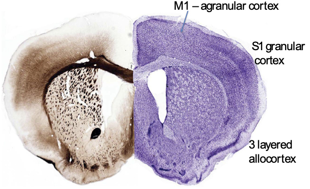
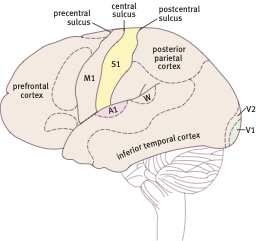
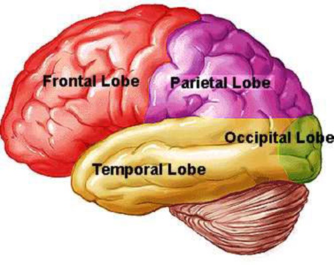
At a histological level, the neocortex is made up of six well-defined layers, numbered one to
six. The primary sensory areas are characterized by dense layers of granule cells - layers 2 and
4. The primary motor cortex is characterized by a prominent pyramidal cell layer (layer 5) and
a virtual absence of the main granule cell layer (layer 4) and so is often referred to as the
agranular cortex. Many pyramidal cells in layer 5 are very large, sending axons over great dis-
tances to reach motor neurons in the spinal cord.
A coronal section of the mouse forebrain showing the histological difference between the
primary motor cortex (M1) and primary somatosensory cortex (S2). The granular layer 4 is
missing from M1 but very prominent in S1.
The Hippocampus
The hippocampus is the part of the cerebral cortex that is involved in memory systems. The
hippocampus arises from the medial pallium. It consists of the dentate gyrus, the three CA re-
gions, the subiculum, and the entorhinal cortex. The hippocampus is responsible for short-
term memory registration.
The entorhinal cortex is located in the parahippocampal gyrus is like a GPS that contains a
precise two-dimensional grid map of surroundings; it helps to link the memory of events to
the place in which they occurred. The entorhinal cortex sends place information to the hip-
pocampus in a chain of connections from the dentate gyrus, the CA3 region, and finally to the
CA1 region. The CA1 region sends its information to the subiculum, which is the output cen-
ter for the hippocampus. The subiculum projects to the septum and hypothalamus via a large
fiber bundle called the fornix.
Subpallial structures
Under the covering of the pallium are a number of large specialized neuron groups. The
largest of these groups are the striatum and pallidum, which play essential roles in the control
of movements. The smaller subpallial groups (the amygdala, septum, and preoptic area) are
concerned with emotional expression and behavior patterns.
The cerebrum can be divided into lobes, which are named for the overlying cranial bones –
frontal, parietal, temporal, and occipital.
The lobes of the cerebrum as viewed from the lateral side. The central sulcus separates the
frontal and parietal lobes. The lateral fissure separates the temporal lobe from the frontal
and parietal lobes.
The neocortex has well-defined sensory areas for the reception of touch (S1), vision (V1),
hearing (A1), and taste. The visual cortex is located in the occipital pole of the cortex, and the
auditory cortex is located in the temporal lobe. The touch (somatosensory cortex) is located
rostrally near the frontal pole. The neocortex has no olfactory sensory area because all olfac-
tory information projects to the ventral cortical areas – the olfactory bulb, olfactory tubercle,
and piriform cortex. In front of the somatosensory cortex is the primary motor cortex – an
area devoted to voluntary motor control of the opposite side of the body. Electrical stimulation
of the motor cortex produces movements on the opposite side of the body. The motor cortex
sends a major pathway to the brainstem (corticobulbar tract) and another to the spinal cord
(corticospinal tract) to initiate movements.
The primary sensory and motor areas in the cortex. The primary somatosensory area (S1)
is separated from the primary motor area (M1) by the central sulcus. The primary auditory
area is separated from S1 by the deep lateral fissure (not labeled here). The primary visual
area is almost entirely located on the medial side of the occipital lobe. The taste area cannot
be seen in this diagram because it is hidden in the lateral fissure.
49
50
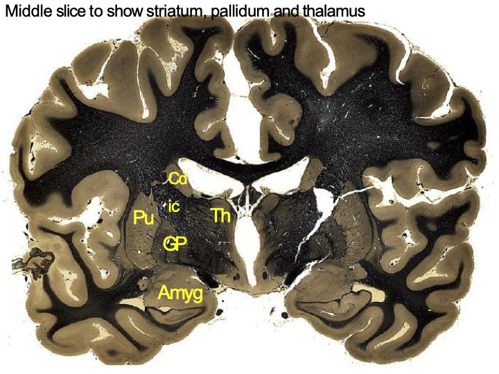
The amygdala
The amygdala lies deep to the piriform (primary olfactory) cortex on the medial side of the
temporal lobe, just rostral to the hippocampus. The amygdala is a complex structure made up
of many different subnuclei. The subnuclei of the amygdala can be divided into two main
groups – a medical group that is interconnected with the olfactory system and a lateral group
that is connected to circuits involved in emotional responses, particularly fear. The lateral
group in the amygdala responds to sensations that signal danger. It can react by activating au-
tonomic and endocrine centers, such as the 'fight or flight' mechanisms. Most of these circuits
are closely interconnected with the hypothalamus. Fear and stress can generate very powerful,
unconscious emotional memories through the amygdala. These unconscious fears are very
difficult to suppress or erase.
Another major role of the amygdala is its control of hierarchical behavior (pecking order) in
vertebrates. Social hierarchies are fundamental in animals that belong to large groups where
dominance behaviors maintain the effective structure of the group.
There is a complex relationship between the amygdala and aggressive behavior, and the na-
ture of aggressive behavior is often misinterpreted. Konrad Lorenz argued that the strongest
forms of aggressive behavior are those that occur between members of the same species, usu-
ally related to attempts to establish a place in a hierarchy (Lorenz, 2002).
A discredited term – 'The Limbic System'
In many textbooks, a section dealing with the amygdala and related structures is titled 'The
Limbic System.' We strongly recommend you avoid using this term because it can be defined
in many different and confusing ways. The term 'limbic' has its origin in 'le grand lobe lim-
bique' of Broca. Broca wanted to draw attention to the curved belt of telencephalic structures
that border the central parts of the forebrain (the word limbic refers to a borderland). This
original definition of the 'limbic lobe' included the ventral hippocampus, the amygdala, the
cingulate gyrus, and the fornix. However, in the contemporary literature, the limbic lobe is of-
ten said to include all the various parts of the hippocampal formation, the septum, the olfac-
tory tubercle, and the bed nucleus of the stria terminalis, the amygdala, and the cingulate
gyrus. Different authors add or subtract structures from the definition in what sometimes
seems to be a random manner. Some go so far as to include the hypothalamus and parts of the
brainstem. Their logic is that all structures that might be involved in emotions or primitive be-
haviors should be lumped together under this title. The result is so confusing that we strongly
recommend that you avoid using the term 'limbic' altogether.
The subcortical white matter
Deep to the cerebral cortex is a thick layer of white matter. In connectional terms, the axons in
the cerebral white matter are of three types – association fibers, commissural fibers, and pro-
jection fibers. The association fibers run from one area of the cortex to another area of the cor-
tex within the same hemisphere. They may be short (joining the cortex of adjacent gyri, for
example) or may form long association bundles running from one lobe to another. The com-
missural fibers join cortical areas of one hemisphere to equivalent areas on the opposite side.
The projection fibers travel downwards from the cortex to the striatum, pallidum, dien-
cephalon, midbrain, hindbrain, and spinal cord, or upwards from the thalamus to the cortex.
Forebrain commissures
There are four commissures in the forebrain, the largest of which is the corpus callosum,
which connects the neocortical areas of the two sides. The hippocampal commissure (fornix
commissure) connects the right and left hippocampal regions. The anterior commissure con-
nects areas of the temporal lobes, including some olfactory areas. The small posterior com-
missure is located in the pretectal area of the diencephalon, adjacent to the midbrain.
The corpus callosum lies under the cingulate gyrus, above the septum, and the lateral ventri-
cle. The rostral end is called the genu, the central part is called the body, and the thickened
caudal end is called the splenium. The ventral tip of the genu forms the rostrum of the corpus
Striatum and pallidum – the 'basal ganglia'
The largest of the subpallial groups are the striatum and globus pallidus. Traditional terminol-
ogy refers to this pair as the 'basal ganglia.' Unfortunately, different books use the term basal
ganglia in a variety of different ways, some adding the amygdala and other deep forebrain
structures, and some even adding parts of the diencephalon and midbrain such as the zona in-
certa and substantia nigra. Because of this, it is best either to avoid the use of the term basal
ganglia altogether or to make it clear when you are referring to the striatum and globus pal-
lidus alone.
Middle slice to show striatum, pallidum and thalamus.
The striatum contains two parts, the caudate nucleus and the putamen. On the medial side of
the putamen is the pallidum, represented chiefly by the globus pallidus. Together the striatum
and pallidum form a powerful motor control system, enabling the brain to choose from a 'li-
brary' of inherited stereotyped behaviors according to the need at any moment. The striatum
receives a significant input from the motor cortex, and it in turn projects to the globus pal-
lidus. The globus pallidus to the ventrolateral nucleus of the thalamus and the circuit is com-
pleted by the projection of this nucleus to the motor cortex. Another important input connec-
tion of the striatum is the dopaminergic pathway that arises from the substantia nigra. Damage
to this dopaminergic projection is the underlying cause of Parkinson's disease.
A less well-known part of the striatum is the accumbens nucleus, which lies ventral to the ros-
tral parts of the caudate and putamen. The accumbens nucleus also receives a dopaminergic
projection from the brainstem, but in this case, it comes from the ventral tegmental area,
which is medial to the substantia nigra. The dopaminergic projection to the accumbens forms
the basis of an internal reward system in the brain.
51
52
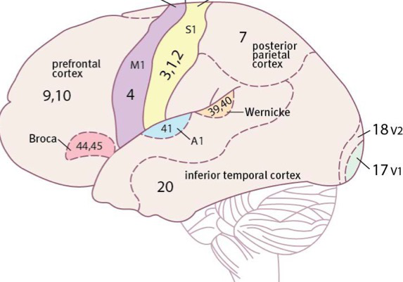
The Broadmann areas of the cortex
A number of anatomically distinct areas can be recognized in the human neocortex. Many
modern studies estimate that there may be about 180 anatomically and functionally distinct ar-
eas in the human neocortex.
There have been several attempts over the past 150 years to define the major human cortical
areas. The most influential is Brodmann's.
In 1910, Brodmann published a numbered list of about 50 different areas based on histologi-
cal differences. This numbering system is still widely used today.
The most recognized Brodmann areas are the following:
-
area 4 – primary motor cortex (M1) - located in the precentral gyrus
-
areas 9 and 10 – the prefrontal cortex – located rostral to the primary motor cortex
-
areas 3, 1, and 2 – primary somatosensory cortex (S1) - located in the post-central
gyrus
-
area 41 – primary auditory cortex (A1) – located on the upper surface of the superior
temporal gyrus, mainly inside the lateral fissure
-
area 17 – primary visual cortex (V1) – located on the medial surface of the occipital
lobe in the upper and lower banks of the calcarine sulcus
-
areas 45 and 44 - Broca's area (motor speech area) – located in the triangular and oper-
cular parts of the inferior frontal gyrus, immediately rostral to the inferior part of the
precentral gyrus in the dominant hemisphere
-
areas 39 and 40 – Wernicke's area (speech comprehension area) – located on the upper
surface of the superior temporal gyrus caudal to the primary auditory cortex in the
dominant hemisphere. Most of Wernicke' area is inside the lateral fissure.
Overview of important Broadmann areas.
callosum. In most cases, fibers crossing in the corpus callosum connect symmetrical parts of
the cortex. The fibers crossing in the genu of the corpus callosum reach the tip of the frontal
lobe in a U-shaped formation called the forceps minor. Similarly, the fibers crossing in the
splenium reach the tip of the occipital lobe in a larger U-shaped formation called the forceps
major.
The hippocampal commissure (also called the fornix commissure) is located ventral to the
corpus callosum.
The anterior commissure is located at the rostral end of the diencephalon in front of the an-
terior columns of the fornix. The anterior commissure is a very useful landmark in the study
of sections of the forebrain: it lies at the rostral end of the diencephalon at the level where the
interventricular foramen connects the lateral ventricle to the third ventricle. The preoptic area
is ventral to the anterior commissure, which is the most ventral part of the subpallium, and
caudal to the preoptic area is the rostral end of the hypothalamus. The anterior commissure is
also a good marker for the rostral end of the hippocampus and the amygdala in human brain
slices.
The posterior commissure is found in the caudal pretectal area. It links together a number of
pretectal nuclei involved in eye reflexes. In the past, the posterior commissure was often mis-
takenly thought to belong to the midbrain, but gene expression proves it lies in the caudal di-
encephalon.
Questions for repetition
-
Of what does the telencephalon consist of?
-
What does the pallium comprise?
-
What enables the human brain to undergo massive expansion?
-
What separates the primary motor and the primary sensory areas?
-
What layers make up the neocortex?
-
Which part of the striatum is involved in the reward system?
-
In which functions is the amygdala involved?
-
What types of white matter tracks can be distinguished?
53
54
 MOTOR SYSTEMS
Motor systems
The nervous system can respond to external challenges through muscle contraction, internal
adjustments to heart rate and breathing, and secretion of hormones in response to stress and
other bodily requirements.
Control of skeletal muscles
The skeletal muscles are under voluntary control most of the time. However, in some cases,
the contraction of these muscles is in the form of a reflex, such as when we burn our fingers in
a flame. Reflexes are faster than the typical system of conscious control.
In humans, the central area for the control of the skeletal muscles starts is the primary motor
area of the cerebral cortex, which is located in the precentral gyrus of the frontal lobe. Electri-
cal stimulation of the motor cortex produces contraction of muscles on the opposite side of
the body. The body parts are represented upside down on the precentral gyrus, with the head
at the bottom, and the lower limb at the top, with the muscles of the leg and foot, represented
on the extension of the motor cortex onto the medial surface of the hemisphere.
The somatotopic pattern of control of muscles in the primary motor cortex. Note that the
areas for control of the leg and foot muscles are on the medial side of the cortex.
The motor cortex is connected to the motor neurons of the spinal cord by a long pathway
called the corticospinal tract. The corticospinal tract arises from large pyramidal cells in the
motor cortex. Their axons travel through the internal capsule, cerebral peduncle, the basilar
pons, and the medullary pyramid to reach the caudal end of the hindbrain. At this point, most
of the corticospinal fibers cross to the opposite side in the pyramidal decussation. Due to that,
they make connections with motor neurons on the opposite side of the body from their corti-
cal origin.
Because the corticospinal fiber bundles form the medullary pyramids, the corticospinal tract
has traditionally been called the pyramidal tract. This term is in some ways unfortunate be-
cause, by coincidence, the cells of origin of the corticospinal tract are pyramid-shaped neu-
rons in the motor cortex. Another reason to avoid using the term pyramidal tract is the unfor-
Questions for repetition
-
How many, functionally different neocortical areas are assumed nowadays?
-
Which Broadmann areas are included in Broca's area?
-
In which functions are Broadmann areas 39 and 40 involved?
55
56
MOTOR SYSTEMS
Motor systems
The nervous system can respond to external challenges through muscle contraction, internal
adjustments to heart rate and breathing, and secretion of hormones in response to stress and
other bodily requirements.
Control of skeletal muscles
The skeletal muscles are under voluntary control most of the time. However, in some cases,
the contraction of these muscles is in the form of a reflex, such as when we burn our fingers in
a flame. Reflexes are faster than the typical system of conscious control.
In humans, the central area for the control of the skeletal muscles starts is the primary motor
area of the cerebral cortex, which is located in the precentral gyrus of the frontal lobe. Electri-
cal stimulation of the motor cortex produces contraction of muscles on the opposite side of
the body. The body parts are represented upside down on the precentral gyrus, with the head
at the bottom, and the lower limb at the top, with the muscles of the leg and foot, represented
on the extension of the motor cortex onto the medial surface of the hemisphere.
The somatotopic pattern of control of muscles in the primary motor cortex. Note that the
areas for control of the leg and foot muscles are on the medial side of the cortex.
The motor cortex is connected to the motor neurons of the spinal cord by a long pathway
called the corticospinal tract. The corticospinal tract arises from large pyramidal cells in the
motor cortex. Their axons travel through the internal capsule, cerebral peduncle, the basilar
pons, and the medullary pyramid to reach the caudal end of the hindbrain. At this point, most
of the corticospinal fibers cross to the opposite side in the pyramidal decussation. Due to that,
they make connections with motor neurons on the opposite side of the body from their corti-
cal origin.
Because the corticospinal fiber bundles form the medullary pyramids, the corticospinal tract
has traditionally been called the pyramidal tract. This term is in some ways unfortunate be-
cause, by coincidence, the cells of origin of the corticospinal tract are pyramid-shaped neu-
rons in the motor cortex. Another reason to avoid using the term pyramidal tract is the unfor-
Questions for repetition
-
How many, functionally different neocortical areas are assumed nowadays?
-
Which Broadmann areas are included in Broca's area?
-
In which functions are Broadmann areas 39 and 40 involved?
55
56
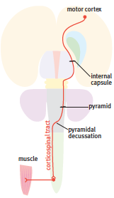
tract in humans, other nearby areas, such as the striatum, are also damaged. Because of this,
the loss of fine movement is accompanied by hypertonia (stiffness or spasticity) and hyper-
reflexia related to striatal damage.
The role of non-cortical motor centers – modules for motor control
We plan movements conceptually, thinking in sequences and outcomes rather than joint an-
gles and contraction of individual muscles. The brain translates high-level action plans into
modular systems to manage the control of dozens of muscles needed to carry out a particular
task to make this process more efficient. These modular control systems are found in the brain
stem and spinal cord. These modules are pre-wired during brain development to produce
semi-automatic movements like walking and chewing. This makes it easier for the motor cor-
tex to get a result without the need to connect to individual motor neurons. During vertebrate
evolution, complex behaviors and movement sets became organized in a hierarchy of mod-
ules. At the top of the hierarchy are survival behaviors - eating and drinking behaviors, defen-
sive behaviors, reproductive behaviors, and movement patterns to explore the immediate envi-
ronment. The most important centers for the control of survival behaviors are located in the
hypothalamus.
Brainstem and spinal cord modules for control of complex movements
Each hypothalamic behavioral organizer connects with movement modules in the brainstem
and spinal cord. For example, feeding may involve turning the head to look around, running
to a food source, reaching and grasping, and licking and chewing. Each of these activities is
sequenced by a particular part of the midbrain, hindbrain, or spinal cord. The hypothalamus
activates a number of these movement modules in a coordinated program to achieve the de-
sired behavior. The brainstem offers modules for orienting movements of the head and neck,
licking, chewing, facial expression, vocalization, and control of breathing. The movement
modules in the spinal cord include those that control posture, locomotion, reaching, and
grasping.
An example of modular control at the spinal cord level is the withdrawal of the lower limb
from a sharp pain in the foot, such as standing on a piece of broken glass. Interneuron groups
of the spinal cord entirely handle this complex response, and the withdrawal movement oc-
curs before the pain is even registered in the cerebral cortex. The primary response is to pull
the foot away from the source of the pain, requiring contraction of hip flexors (psoas and ilia-
cus) and knee flexors (hamstrings) while inhibiting the corresponding extensors to permit the
movement. The problem with this response is that it will also cause a fall unless adjustments
are made. The module takes care of this by contracting hip extensors, hip abductors, and knee
extensors of the opposite leg to stabilize the body. In this way, ten or more muscles in each leg
are either contracted or made to relax in order to achieve the whole pattern of movement
needed to terminate a painful stimulus.
tunate and now discredited 'pyramidal/extrapyramidal' concept, which was an early but misin-
formed attempt to explain the organization of different parts of the motor systems.
The concept of an extrapyramidal system became popular among neurologists in the
early 20th century, who were trying to distinguish the motor problems arising from
damage to the pyramidal (corticospinal) tract from other motor syndromes. They con-
trasted the direct (monosynaptic) projection of the cortex to motoneurons (the pyrami-
dal system) with what they believed to be an alternative multisynaptic pathway from
cortex to motoneurons, which they called the extrapyramidal system. They hypothe-
sized that this multisynaptic pathway went from cortex to striatum and pallidum, then
to various midbrain and hindbrain centers, and finally to the spinal cord. The problem
is that the hypothesized chain of descending connections does not exist. It was fa-
mously debunked in 1962 by Nauta and Mehler. They showed that the globus pallidus
projects almost entirely to the thalamus rather than to the midbrain and the hindbrain
motor centers. Despite this, the 'extrapyramidal' concept lives on in textbooks and in
lectures given by neurologists.
The course of the corticospinal tract from the motor cortex to the spinal cord.
Damage to the corticospinal tract
Humans who experienced damage to the motor cortex or the corticospinal tract cannot per-
form tasks that require precise movements of individual fingers, such as writing, sewing, tying
knots, and picking up small objects. Less precise movements, and those that involve larger
muscle groups, are less severely affected. When a cerebral stroke damages the corticospinal
57
58

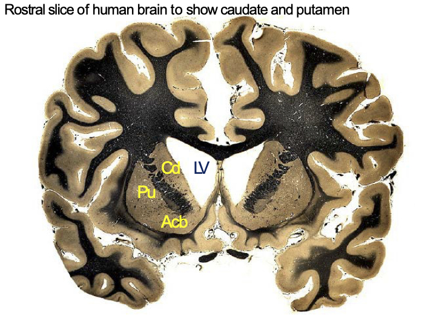
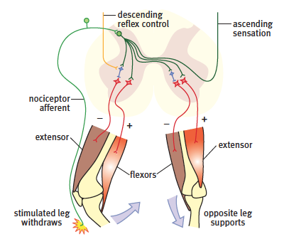
A rostral coronal slice showing the caudate (Cd), putamen (Pu), and accumbens (Acb).
A coronal slice through the middle of the cerebrum showing the caudate nucleus (Cd),
putamen (Pu), and globus pallidus (GP) and their relationship to the internal capsule (ic)
and thalamus (Th).
Reflex actions following a painful injury to the right foot. On the right-hand side, the flexor
muscles pull the foot away from the painful stimulus, and the extensors are inhibited. On
the left side, the extensor muscles are activated to maintain stability.
Descending motor control pathways other than the corticospinal tract
As well as sending fibers to the spinal cord in the corticospinal tract, the motor cortex sends
axons to the basilar pons (corticopontine fibers) and the brain stem (corticobulbar fibers) in
order to connect with the cerebellum and brain stem motor centers. Several centers in the
brainstem give rise to descending tracts that end in the interneuron pools of the intermediate
spinal gray matter. These are the rubrospinal, tectospinal, reticulospinal, and vestibulospinal
tracts, each controlling different aspects of movement.
The roles of the striatum and pallidum in motor control
The striatum and the pallidum are large masses of gray matter that lie deep to the cerebral cor-
tex. The striatum consists of three parts – the caudate nucleus, the putamen, and the accum-
bens nucleus. Medial to the putamen in the main part of the pallidum, called the globus pal-
lidus. The globus pallidus is separated from the thalamus by the internal capsule.
The accumbens nucleus lies deep to the rostral parts of the caudate nucleus and putamen.
The striatal and pallidal centers have a long evolutionary history and can be clearly identified
in reptiles and birds. The striatum and pallidum are part of a major forebrain circuit of con-
nections, regulating the form and style of movements.
This circuit begins with neurons in the motor cortex, projecting to cells in the striatum. Stri-
atal neurons project to the pallidum. The pallidum projects to the midbrain and the thalamus.
The thalamic nucleus involved then projects back to the cerebral cortex, altering movements
in the planning stage or while they are in progress. The substantia nigra is intimately con-
nected with the striatum through the dopaminergic nigrostriatal pathway.
59
60
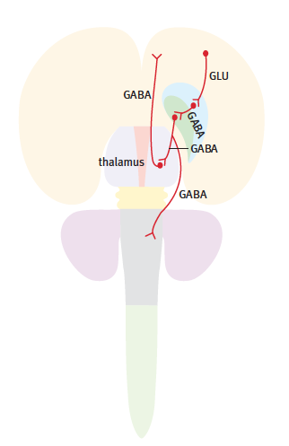
The result is major disorders of muscle tone (often called spasticity) and a variety of involun-
tary movements.
The final common pathway for all motor systems – the motor neuron
All motor control systems act through the motor neurons: the final pathway to muscles. Large
(alpha) motor neurons in the ventral horn of the spinal cord activate the skeletal muscles of
the limbs and trunk. Similar alpha motor neurons in the midbrain and hindbrain activate the
voluntary muscles of the head. Each alpha motor neuron is connected to many fibers in a
skeletal muscle. When the alpha motor neuron fires, all of the fibers to which it is connected
will contract. The motor unit is the combination of a single alpha motor neuron and the mus-
cle fibers to which it connects. Activating alpha motor neurons is the only way to cause skele-
tal muscle fibers to contract. As a result, all the motor control systems described above
achieve their effects by stimulating or suppressing alpha motor neurons. The English physiol-
ogist and Nobel prize winner, Charles Sherrington, coined the term' final common pathway' to
describe the role of alpha motor neurons.
Questions for repetition
-
Of what parts does the striatum consist of?
-
Describe the course of the corticospinal tract.
-
What happens when the corticospinal tract is damaged?
-
How is the globus pallidus separated from the thalamus?
-
How is the substantia nigra connected to the striatum?
The connection circuit starting from excitatory glutamate neurons in the primary motor
cortex (GLU). The cortical GLU neurons project to GABA neurons in the striatum. The
GABA striatal neurons in turn project to GABA neurons in the pallidum. The circuit is
completed by the projection of the pallidal neurons to the thalamus and the thalamic GABA
projection back to the cortex.
This set of connections underlies the production of predetermined movement patterns. Many
species are known to have complex patterns of movement associated with mating and or dis-
plays of aggression. It seems possible that the striatal/pallidal complex is the main center for
the initiation of these genetically determined movement patterns.
An interesting feature of the cells of the striatum and pallidum is that they influence the cortex
by inhibiting thalamic neurons using the inhibitory neurotransmitter GABA. This makes them
very different from the cortical neurons that connect to the striatum; these cortical neurons re-
lease the excitatory transmitter substance glutamate.
We do not have a clear idea of the precise role of the striatum and pallidum in humans, but we
do have clues from cases in which these areas are damaged. The findings are disorders of the
resting tone of muscles, difficulty starting movements, and unwanted involuntary movements.
In Parkinson's disease, the input to the striatum from the substantia nigra is damaged. The re-
sult is a massive and disabling increase in muscle tone, accompanied by tremor in the hands,
and great difficulty in starting movements. A severe form of damage to the striatum is seen in
late-stage Huntington's disease, where the face, trunk, and limbs writhe continuously. In the
case of cerebral palsy, the striatum and pallidum are likely damaged in the baby before birth.
61
62
 Dorsal column-medial lemniscus pathway
This is the main touch pathway. It transmits signals from low-threshold mechanoreceptors in
the skin, muscles, and joints. This enables tactile discrimination, vibration detection, and
proprioception (sense of position from joint and muscle receptors).
The main touch pathway's first-order (primary) neurons are located in the dorsal root ganglia.
The axons of the ganglion cells carrying information from the lower limbs form the gracile
fasciculus, while in the upper extremities, they form the cuneate fasciculus. The two fasciculi
are collectively known as the dorsal columns.
The dorsal column axons ascend to the hindbrain, where they terminate in the gracile and
cuneate nuclei. The axons leaving the cells of the gracile and cuneate nuclei cross the midline
and form a compact bundle called the medial lemniscus. The medial lemniscus ascends
through the brain stem to synapse with third-order neurons in the ventroposterior nucleus of
the thalamus. The thalamic neurons send their axons to the primary somatosensory cortex in
the postcentral gyrus.
Spinothalamic tracts
There are two spinothalamic tracts, lateral and ventral. Information about pain
and temperature is conveyed by the lateral spinothalamic tract, while the ventral
spinothalamic tract conveys touch sensation. The first-order neurons of the spinothalamic sys-
tem are located in the spinal ganglia. The axons of these ganglion cells enter the spinal cord
and ascend for a few segments before they synapse with second-order neurons in the substan-
tia gelatinosa of the dorsal horn. The axons of the second-order neurons cross the midline in
the anterior white commissure of the spinal cord to form the spinothalamic tracts. The crossed
pain and temperature neurons form the lateral spinothalamic tract in the lateral column of the
spinal cord. In contrast, the crossed touch neurons form the ventral spinothalamic tract in the
ventral column of the spinal cord.
The spinothalamic tracts ascend along the spinal length and then travel through the brain stem
until they reach the thalamus. In the thalamus, they synapse with third-order neurons in the
ventroposterior nucleus. The axons of the ventroposterior thalamic neurons travel to the soma-
tosensory cortex.
The cranial somatosensory system
Almost all cranial somatosensory fibers in the head travel in the trigeminal nerve. The first-
order trigeminal sensory neurons are located in the trigeminal ganglion in the skull base. The
trigeminal ganglion axons enter the hindbrain through the side of the basilar pons. Some of
these fibers synapse in the principal trigeminal sensory nucleus, which lies at the level of
entry of the trigeminal nerve. However, many of the fibers descend in the hindbrain for con-
siderable distances before they make contact with second-order neurons. Some of the des-
cending fibers travel as far as upper cervical segments before they synapse.
The descending trigeminal fibers form the spinal trigeminal tract, and the trigeminal nuclear
groups caudal to the principal nucleus are called the nucleus of the spinal trigeminal tract.
Trigeminal fibers carrying touch sensation synapse in the principal sensory nucleus and the
rostral part of the spinal trigeminal nucleus. Whereas those carrying pain and temperature sen-
sation synapse in the caudal part of the spinal trigeminal nucleus.
The axons of the neurons of the principal sensory nucleus and the spinal trigeminal nucleus
cross the midline and ascend to the medial part of the ventroposterior nucleus thalamus. The
ventroposterior nucleus sends its axons to the inferior half of the postcentral gyrus.
The primary somatosensory cortex
The primary somatosensory cortex is located in the postcentral gyrus, in Brodmann areas 3, 1,
and 2. The somatosensory information reaching the postcentral gyrus is topically organized.
Each individual region of the body is represented in a separate area on the gyrus, with the
head at the bottom and the lower limb at the top.
SENSORY SYSTEM
The somatosory system
Somatic sensations come from the skin, muscles, joints, and bones. Somatic sensations from
the head travel to the brain stem in the trigeminal nerve, whereas those below the head travel
in spinal nerves to the spinal cord. Somatic sensations from the skin are touch, deep pressure,
pain, and temperature.
Somatosensory pathways in the spinal cord
Both the spinothalamic tracts and the dorsal columns (gracile and cuneate fasciculi) convey
somatosensory information from one side of the body to the cerebral cortex of the opposite
side via the thalamus. Each of these systems is basically a chain of three neurons: the first
neuron is a dorsal root ganglion cell with its central process entering the spinal cord to ascend
for some distance before it synapses with the second neuron in the chain; the axon of the sec-
ond neuron crosses the midline immediately and ascends to the thalamus; the third neuron
sends its axon from the thalamus to the cerebral cortex.
The pain and temperature-sensitive fibers (spinothalamic tract) cross the midline a few seg-
ments above the level at which they enter the spinal cord. In contrast, fine touch and proprio-
ception fibers (dorsal column-medial lemniscus pathway) do not cross until they reach the
hindbrain.
The spinal somatosensory pathways. Touch and deep pressure sensations are carried in the
dorsal column-medical lemniscus system. Pain and temperature sensations are carried in
the spinothalamic system.
The dorsal column tracts carry touch, deep pressure, proprioceptive, and vibration sense infor-
mation in the gracile and cuneate fasciculi - the gracile fasciculus mainly conveys information
from the hindlimb. The cuneate fasciculus conveys information from the forelimb.
63
64
Dorsal column-medial lemniscus pathway
This is the main touch pathway. It transmits signals from low-threshold mechanoreceptors in
the skin, muscles, and joints. This enables tactile discrimination, vibration detection, and
proprioception (sense of position from joint and muscle receptors).
The main touch pathway's first-order (primary) neurons are located in the dorsal root ganglia.
The axons of the ganglion cells carrying information from the lower limbs form the gracile
fasciculus, while in the upper extremities, they form the cuneate fasciculus. The two fasciculi
are collectively known as the dorsal columns.
The dorsal column axons ascend to the hindbrain, where they terminate in the gracile and
cuneate nuclei. The axons leaving the cells of the gracile and cuneate nuclei cross the midline
and form a compact bundle called the medial lemniscus. The medial lemniscus ascends
through the brain stem to synapse with third-order neurons in the ventroposterior nucleus of
the thalamus. The thalamic neurons send their axons to the primary somatosensory cortex in
the postcentral gyrus.
Spinothalamic tracts
There are two spinothalamic tracts, lateral and ventral. Information about pain
and temperature is conveyed by the lateral spinothalamic tract, while the ventral
spinothalamic tract conveys touch sensation. The first-order neurons of the spinothalamic sys-
tem are located in the spinal ganglia. The axons of these ganglion cells enter the spinal cord
and ascend for a few segments before they synapse with second-order neurons in the substan-
tia gelatinosa of the dorsal horn. The axons of the second-order neurons cross the midline in
the anterior white commissure of the spinal cord to form the spinothalamic tracts. The crossed
pain and temperature neurons form the lateral spinothalamic tract in the lateral column of the
spinal cord. In contrast, the crossed touch neurons form the ventral spinothalamic tract in the
ventral column of the spinal cord.
The spinothalamic tracts ascend along the spinal length and then travel through the brain stem
until they reach the thalamus. In the thalamus, they synapse with third-order neurons in the
ventroposterior nucleus. The axons of the ventroposterior thalamic neurons travel to the soma-
tosensory cortex.
The cranial somatosensory system
Almost all cranial somatosensory fibers in the head travel in the trigeminal nerve. The first-
order trigeminal sensory neurons are located in the trigeminal ganglion in the skull base. The
trigeminal ganglion axons enter the hindbrain through the side of the basilar pons. Some of
these fibers synapse in the principal trigeminal sensory nucleus, which lies at the level of
entry of the trigeminal nerve. However, many of the fibers descend in the hindbrain for con-
siderable distances before they make contact with second-order neurons. Some of the des-
cending fibers travel as far as upper cervical segments before they synapse.
The descending trigeminal fibers form the spinal trigeminal tract, and the trigeminal nuclear
groups caudal to the principal nucleus are called the nucleus of the spinal trigeminal tract.
Trigeminal fibers carrying touch sensation synapse in the principal sensory nucleus and the
rostral part of the spinal trigeminal nucleus. Whereas those carrying pain and temperature sen-
sation synapse in the caudal part of the spinal trigeminal nucleus.
The axons of the neurons of the principal sensory nucleus and the spinal trigeminal nucleus
cross the midline and ascend to the medial part of the ventroposterior nucleus thalamus. The
ventroposterior nucleus sends its axons to the inferior half of the postcentral gyrus.
The primary somatosensory cortex
The primary somatosensory cortex is located in the postcentral gyrus, in Brodmann areas 3, 1,
and 2. The somatosensory information reaching the postcentral gyrus is topically organized.
Each individual region of the body is represented in a separate area on the gyrus, with the
head at the bottom and the lower limb at the top.
SENSORY SYSTEM
The somatosory system
Somatic sensations come from the skin, muscles, joints, and bones. Somatic sensations from
the head travel to the brain stem in the trigeminal nerve, whereas those below the head travel
in spinal nerves to the spinal cord. Somatic sensations from the skin are touch, deep pressure,
pain, and temperature.
Somatosensory pathways in the spinal cord
Both the spinothalamic tracts and the dorsal columns (gracile and cuneate fasciculi) convey
somatosensory information from one side of the body to the cerebral cortex of the opposite
side via the thalamus. Each of these systems is basically a chain of three neurons: the first
neuron is a dorsal root ganglion cell with its central process entering the spinal cord to ascend
for some distance before it synapses with the second neuron in the chain; the axon of the sec-
ond neuron crosses the midline immediately and ascends to the thalamus; the third neuron
sends its axon from the thalamus to the cerebral cortex.
The pain and temperature-sensitive fibers (spinothalamic tract) cross the midline a few seg-
ments above the level at which they enter the spinal cord. In contrast, fine touch and proprio-
ception fibers (dorsal column-medial lemniscus pathway) do not cross until they reach the
hindbrain.
The spinal somatosensory pathways. Touch and deep pressure sensations are carried in the
dorsal column-medical lemniscus system. Pain and temperature sensations are carried in
the spinothalamic system.
The dorsal column tracts carry touch, deep pressure, proprioceptive, and vibration sense infor-
mation in the gracile and cuneate fasciculi - the gracile fasciculus mainly conveys information
from the hindlimb. The cuneate fasciculus conveys information from the forelimb.
63
64
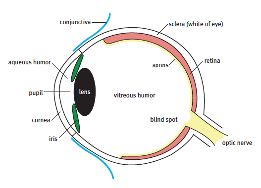
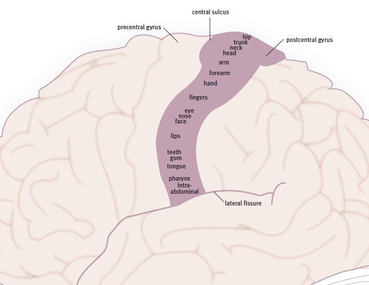
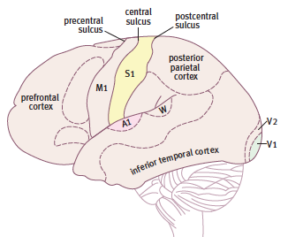
The visual system
The eye collects visual information to send to the brain. Before reaching the retina, light
passes through the cornea, aqueous humor, lens, and vitreous humor. Visual images are fo-
cused by the cornea and lens before they reach the retina. The retina is enclosed in a thick
fibrous layer called the sclera.
A diagram of the eye.
The light receptor cells of the retina, the rods and cones, lie in the deepest layer of the retina,
so light must pass through the surface layers of the retina before it reaches the receptors.
The human retina is in the form of a deep cup. Its outline represents about three-quarters of a
sphere with a diameter of 22 mm. The human retina contains about 7 million cone cells and
about 700 million rod cells. The cone cells are concentrated in a central area called the mac-
ula. They are responsible for high acuity and color vision. There are very few rod cells in the
macula. Cones are sensitive to bright light and fall into three categories that respond to light
in the spectrum's red, green, or blue parts. The rod cells do not discriminate between colors.
Instead, they are sensitive to dim light and react quickly to moving objects entering the visual
field.
Just medial to the macula is an area where the axons leave the retina forming the optic nerve.
There are no photoreceptors in this area, so it creates a blind spot on the retina, about 1.5 - 2.0
mm in diameter.
The retinal cell layers
The cells of the retina are arranged in distinct layers, the most prominent of which are the
photoreceptor layer, the bipolar layer, and the ganglion cell layer. As noted above, the
photoreceptor layer is the deepest layer of the retina–furthest from the entry path of light rays.
The receptor cells in this layer are the rods and cones. The light-sensitive processes of the
rods are partly embedded in the pigmented epithelial layer. Superficial to the photoreceptor
layer is the bipolar layer. The bipolar cells receive information from photoreceptors and send
signals to ganglion cells. Amacrine cells and horizontal cells are also located in the bipolar
layer. The function of the amacrine and horizontal cells is to modulate the signals reaching the
bipolar cells. The ganglion cell layer lies on the superficial surface of the retina. Ganglion
cells are the largest cells in the retina because they have long axons that travel to the brain in
the optic nerve. The ganglion cell axons in the optic nerve reach centers in the hypothalamus
(the suprachiasmatic nucleus), thalamus (the lateral geniculate nucleus), and the superior col-
liculus of the midbrain.
The primary somatosensory cortex (S1), which lies in the postcentral gyrus.
The somatotopically organized representation of body sensations on the postcentral gyrus.
Questions for repetition
-
What information is summarised as the somatosensory system?
-
How many neurons make up most somatosensory pathways?
-
Where do the fibers that transmit information about temperature cross?
-
How is touch sensation transmitted from the face?
-
Which Broadmann areas does the primary somatosensory cortex com-
prise?
65
66
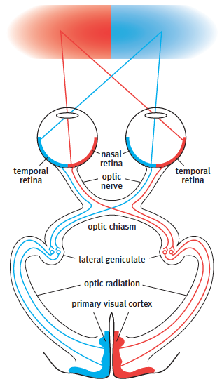
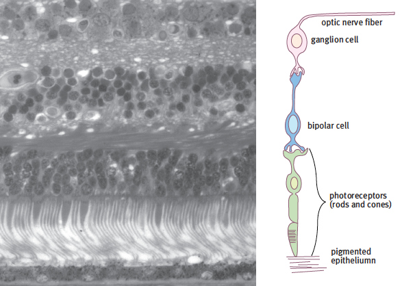
A diagram showing the representation of the visual fields on the retina, the lateral genicu-
late, and the visual cortex. The overall effect is that the right half of the visual field is rep-
resented in the visual cortex and vice versa.
Questions for repetition
-
Describe the path of light through the eye.
-
What is the characteristic stimulus for a rod?
-
What causes the blind spot?
-
Of what layers does the retina consist of?
-
What is the anatomical structure of the visual pathway?
The layers of the retina. On the left is a photomicrograph of a section through the retina
with the ganglion cell layer above and the photoreceptor layer below. A diagram showing
the connections between photoreceptors, bipolar cells, and ganglion cells is on the right.
The intrinsic networks of the retina are capable of significant signal processing and consolida-
tion of information. For example, ganglion cells on the edges of the retina receive information
from a hundred or more rod cells, thus increasing sensitivity to dim light. By contrast, gan-
glion cells in the macula of a human retina receive input from only two or three cones, en-
abling the retina to resolve fine detail.
The organization of the projection from the retina to the brain
The ganglion cell axons from each of the two halves of the retina project to different sides of
the brain. The axons from the medial (nasal) half cross the midline to project to the opposite
side of the brain, whereas the axons from the lateral (temporal) half project to the same side of
the brain.
Because light reaches the retina through a biconvex lens, the image reaching the retina is re-
versed. This means that the light received from the temporal half of the visual field falls upon
the nasal parts of each retina and vice versa. The image from each temporal visual field (nasal
retina) crosses in the chiasm to continue to reach the thalamus and cortex on the opposite side
of the brain. The image from each nasal visual field (temporal retina) remains uncrossed and
continues to reach the thalamus and cortex of the same side as the retina. The outcome is that
the left-hand sides of the visual fields of both eyes run in the right optic tract, and the right-
hand sides of the visual fields of both eyes run together in the left optic tract. The overall res-
ult is that each visual cortex receives information from the opposite side's visual fields. In
other words, the right side of the retina of both eyes (temporal retina of the right eye and nasal
retina of the left eye) projects to the right visual cortex, and vice versa.
67
68
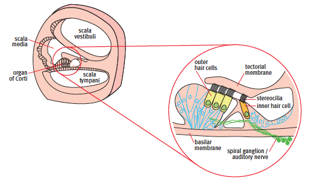
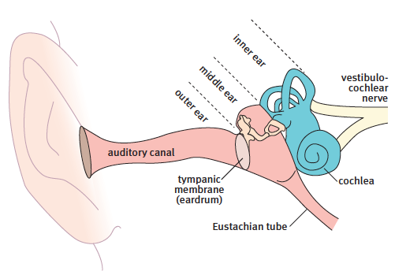
Inside the cochlea are neuronal receptors grouped in a structure called the organ of Corti.
The cochlea contains three fluid-filled tubes, and it is the middle one of these, the scala me-
dia, which houses the organ of Corti. Hair cells in the organ of Corti detect sound vibra-
tions, and the information is transmitted to the hindbrain by the auditory (cochlear) nerve.
The cell bodies of the cochlear nerve fibers are located in the spiral ganglion, which is em-
bedded in the bony structure of the cochlea.
The cell bodies of the auditory receptor neurons, which are connected to the organ of Corti,
are located in the spiral ganglion, which is in the center of the cochlea. Each spiral ganglion
cell has an incoming axon process connected to the organ of Corti and an outgoing axon pro-
cess that travels in the auditory nerve to the brain stem.
The auditory nerve axons terminate in the cochlear nuclei in the hindbrain. The cochlear nuc-
lei project to the superior olivary complex. From there, the auditory information is sent to the
inferior colliculus of the midbrain, where it is further processed before being sent to the me-
dial geniculate nucleus in the thalamus. The medial geniculate projects to the primary audit-
ory cortex (A1) on the upper surface of the superior temporal gyrus. The auditory pathway
faithfully maintains the frequency map from the cochlea to the cortex so that the auditory rep-
resentation that reaches the primary auditory cortex is still tonotopically organized.
The brain stem auditory centers of both sides are interconnected across the midline. This bilat-
eral network allows the brain to work out the position of an incoming sound. Because of these
interconnections between the brain stem auditory nuclei, the primary auditory cortex receives
information from both ears.
The auditory system
The ear collects sound information to send to the brain via the vestibulocochlear nerve.
The ear consists of three parts: the external ear consisting of the pinna, the auditory canal, and
the tympanic membrane (eardrum); the middle ear, which contains the three auditory ossicles;
the inner ear, which contains the cochlea.
Sound enters the external ear through the auditory canal and causes the tympanic mem-
brane to vibrate. This vibration is transmitted across the middle ear by three tiny bones, the
malleus, incus, and stapes. The stapes transmits the vibration to fluid in the internal ear,
and these vibrations eventually reach the cochlea. The cochlea is a bony shell that contains
the sound receptors. Note that the middle ear is connected to the back of the throat by an
air-filled canal called the Eustachian tube, or pharyngotympanic tube.
The three auditory ossicles are named the malleus, incus, and stapes. They form a set of levers
that mechanically transmits sound from the tympanic membrane to the oval window of the in-
ner ear. Sound waves reach the inner ear then reach receptor hair cells in the cochlea. The
cochlea is a bony case shaped like a spiral seashell. It contains the auditory receptor cells,
which convert sound information into nerve impulses.
Inside the cochlear are three spiral tubes, the scala vestibuli, the scala media, and the scala
tympani. Each of these three tubes is filled with fluid. The scala media contains the auditory
receptor apparatus (the organ of Corti), which sits on the basilar membrane. The outer hair
cells of the organ of Corti are the receptor cells that are connected to sensory axons.
The organ of Corti is tonotopically organized. The hair cells respond to different sound fre-
quencies according to their position in the cochlea. The hair cells at the base of the cochlea re-
spond to high frequencies, and the hair cells at the apex of the cochlea respond to low fre-
quencies.
69
70

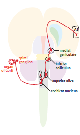
The vestibular system
The name 'vestibular' comes from the vestibule, which is a small bony space in the inner ear
in which the vestibular receptors are located. The vestibule is next to the cochlea, and the two
structures together are housed in the bony labyrinth of the inner ear.
The main functions of the vestibular system are to maintain balance and coordinate eye
movement with the head and body position. These functions are managed at a reflex level,
with
constant adjustments being made to postural muscles and eye movement. Input from the
vestibular system enables the eyes to track an object of interest, even when the body moves
unpredictably. Eye movement coordination uses a network that interconnects the vestibular
system with the visual system, the cerebellum, the spinal cord, and the motor neurons that
control the eye muscles.
As well as controlling this complex reflex network, the vestibular system supplies information
to the cerebral cortex about the body's position in space. This helps to give us a conscious ap-
preciation of the position of the body in space. The somatosensory system also provides vital
information on body position that contributes to our ability to maintain posture and balance.
Some of the position sense information from the somatosensory system comes from touch re-
ceptors in the skin and deep pressure receptors in the feet.
The semicircular canals
The vestibule contains two quite separate systems for gathering information on head position.
One system, based on the semicircular canals, detects movement of the head in any direction.
In contrast, the other system, based on the saccule and utricle system, is designed to register
the position of the head when it is not moving. Therefore, the semicircular canal system can
be described as the dynamic vestibular system, and the saccule/utricle system can be de-
scribed as the static vestibular system.
Overview of the vestibular system.
The auditory pathway from the cochlea to the primary auditory cortex (A1).
Ganglion cells in the spiral ganglion receive information from the organ of Corti, and this
information is transmitted centrally to the cochlear nuclei. Each cochlear nucleus is con-
nected to neurons in the superior olivary nuclei of both sides. The superior olivary nuclei
send axons to the inferior colliculus of the midbrain, which is in turn connected to the me-
dial geniculate nucleus of the thalamus. The geniculate medical projects to the primary
auditory cortex
Questions for repetition
-
How is the inner ear structured?
-
In which anatomical structure are the sensory receptors for the "sound waves" embedded?
-
What is the anatomical structure of the auditory pathway?
-
Which thalamic nucleus is involved in the auditory pathway?
71
72
Schematic overview of the vestibular pathways.
Saccule and utricle
The saccule-utricle system is contained in a pair of recesses in the vestibule. The saccule and
utricle each have a patch of hair cells called a macula. The processes of these hair cells are
embedded in a plate of jelly, as are those of the semicircular canals, but in this case, the jelly
contains calcium carbonate crystals called otoliths. The calcium-containing jelly plate is
called the otolith membrane. When the head is stationary, the weight of the calcium-filled oto-
liths pulls the hair cells under the influence of gravity, and this, in turn, causes the hair cells to
be stimulated. Other external forces such as rapid acceleration can also stimulate the hair cells
in the macula. The receptor clusters of the saccule and utricle are set at right angles to each
other so that they can establish the head's position at all times. The macula of the saccule is set
in the vertical plane, so it is best placed to detect flexion and extension movements of the
head. The macula of the utricle is set in the horizontal plane, so it is best placed to detect lat-
eral tilting of the head. The information gathered by the receptors of the saccule and utricle is
carried to the hindbrain by the vestibular nerve.
Semicircular canals
The semicircular canals are three almost circular tubes containing a fluid called endolymph.
Endolymph is also found in the cochlear duct in contact with auditory hair cells. Each semi-
circular canal is placed in a different spatial plane–one horizontal, one vertical close to the
sagittal plane, and one vertical close to the coronal plane. No matter what direction the head
moves in, it will cause fluid to move around in one or more of the three canals. Each canal has
a widened area called the ampulla, which contains sensitive hair cells. The processes of the
hair cells are embedded in a piece of jelly called the cupula. When the fluid moves in response
to head motion, the cupula is dragged in the direction of fluid movement, twisting the pro-
cesses of the hair cells. The twisting generates an electrical signal, which is carried to the
hindbrain by the vestibular nerve.
The hair cells of each semicircular canal are located in the ampulla. The cilia of the hair
cells detect the movement of the endolymph. The information gathered by the hair cells is
gathered by the axons of the vestibular ganglion cells. The vestibular ganglion cells are un-
usual in that they are true bipolar ganglion cells, not pseudounipolar cells as in the so-
matosensory and auditory systems. The central axon of the vestibular ganglion cell con-
nects with the vestibular nuclei in the hindbrain.
73
74
Olfaction
In most mammals, the sense of smell (olfaction) plays a critical role in recognizing predators,
partners, and offspring. The olfactory system has become less important in humans because
we rely on a highly developed visual system. However, it is not often realized that a great deal
of what we call taste is actually based on olfactory signals. When we have a nasal infection,
and the olfactory receptors are injured or blocked, we lose about 90% of our ability to appre-
ciate flavors. In many animals, olfactory input to the amygdala can initiate emotional re-
sponses, including aggression.
The olfactory epithelium of the nasal cavity converts information on odors into coded neural
signals. Olfactory receptor neurons in the roof of the nose are subject to continual damage,
and in rodents, they have an average lifespan of only 40 days. Because of
this, they have to be constantly replenished from stem cells. Each olfactory receptor neuron
sends an unmyelinated axon through holes in the ethmoid bone in the roof of the nose to
reach the olfactory bulb.
The main olfactory projection is diagrammatically shown on the left of the picture. Fibers
from the olfactory bulb travel in the olfactory tract to reach the primary olfactory cortex
(piriform cortex), the entorhinal cortex, and part of the amygdala. The right side of the dia-
gram shows the accessory olfactory pathway, which does not exist in humans but is an im-
portant structure in many mammals.
In addition to the main olfactory system, many mammals (but not humans) have a second ol-
factory system concerned with detecting pheromones. Pheromones are signaling chemicals re-
leased into the environment to cause behavioral changes in nearby individuals. Insects use
pheromones to signal a wide range of situations, including sexual readiness, alarm, and to
mark a trail. Most mammals have a small pheromone detecting system called the accessory
olfactory system. It is primarily related to sexual signaling. This system is not present in hu-
mans.
The pheromone-sensitive area in the nose is called the vomeronasal organ. Removal of the
vomeronasal organ in juvenile male mice does not impair food-finding abilities but does
Vestibular nuclei
The vestibular nuclei of the hindbrain occupy a large area in the floor of the fourth ventricle.
They are strongly connected with the cerebellum, the spinal cord, and with the system that
controls eye movement. The vestibular connection to the neck and eye muscles ensures that
head and eye positions are constantly linked together. The medial longitudinal fasciculus is
the brain stem pathway linking the eye muscle nuclei and the vestibular nuclei. The close rela-
tionship between the vestibular receptors and eye movement can be demonstrated by spinning
someone around. If you sit someone in a rotating office chair and spin them around ten times
at a moderate speed, then stop them abruptly, you will see the eyes flick from side to side in a
movement called nystagmus. The eye movement happens because the fluid in the horizontal
semicircular canal is still moving when the chair stops moving, and the eye muscle control
system thinks that the head is still moving. It therefore responds with the side-to-side move-
ment of the eyes. The subject will also complain that the room seems to be spinning around
them; this sensation is called vertigo.
It is crucial to distinguish the sensation of vertigo from dizziness. Dizziness is a feeling of un-
steadiness, while in vertigo, the world seems to be moving around you. Vertigo is often ac-
companied by feelings of nausea and may be associated with vomiting in severe cases.
Vestibulospinal tracts
Two important descending tracts arise from the vestibular nuclei – the uncrossed lateral
vestibulospinal tract, which reaches all spinal cord levels, and the crossed medial vestibu-
lospinal tract, which ends in the cervical spinal cord. The medial
vestibulospinal tract is primarily responsive to input from the semicircular canals, and it con-
nects with the neck muscles to control head position. The lateral vestibulospinal tract is
mainly responsive to information from the saccule and utricle; its primary role is to adjust
posture in the limbs and trunk by activating extensor muscles to maintain balance.
Vestibular representation in the cerebral cortex
While the main function of the vestibular system is the automatic control of
body and eye position, the cerebral cortex receives vestibular information
, which contributes to a conscious perception of body position. The main
area receiving vestibular information in monkeys is located between the ventral
part of the primary somatosensory cortex and the insula. It is assumed that
an equivalent area exists in humans. Because the primary somatosensory
cortex is in the postcentral gyrus of the parietal lobe, this area is referred to as
the parietal-insular vestibular cortex. The input to this area is not exclusively vestibular; it
also receives information from the visual system and from position-sense receptors in the
neck.
Questions for repetition
-
What are the two systems for determining head position?
-
What are the differences between these two systems?
-
Which brainstem pathway connects the control of the eye muscles and the vestibular nu-
clei?
-
What is the primary function of the lateral vestibulospinal tract?
75
76
The olfactory (piriform) cortex is in a gyrus called the uncus. It lies at the rostral tip of the
parahippocampal gyrus of the temporal lobe. The olfactory cortex is superficial to the amy-
gdala and is rostral to the hippocampus. The word uncus means a hook, which describes
the shape of this small gyrus.
Questions for repetition
-
Which sense is extremely closely related to the sense of smell?
-
How can mammals also perceive pheromones?
-
Is the olfactory nerve built like a peripheral nerve?
-
What is the primary olfactory cortex in humans called?
-
Are the receptor neurons of the sense of smell a stable tissue?
impair their ability to recognize sexual signals from potential mates. Axons of receptor neur-
ons in the vomeronasal organ project exclusively to the accessory olfactory bulb (AOB) adja-
cent to the main olfactory bulb. The output of the accessory olfactory bulb is to a special nuc-
leus superficial to the amygdala, called the bed nucleus of the accessory olfactory tract.
Projections from the olfactory receptors to the brain
Nerve fibers connected to the olfactory receptor cells in the roof of the nose form twelve to
twenty olfactory nerve bundles. These nerve bundles travel through a series of bony canals in
the ethmoid bone to reach the olfactory bulb on the ventral side of the frontal lobe. Because
the olfactory system is an extension of the forebrain and not a typical nerve, it is surrounded
by meninges and cerebrospinal fluid. Fractures of the bony roof of the nose can therefore res-
ult in meningeal tears and cerebrospinal fluid leakage. The fluid leaks out through the nose,
and the meningeal tear can result in potentially fatal bacterial infection in the cerebrospinal
fluid space around the brain.
Fibers of the olfactory bulb continue to form the olfactory tract, which lies in a groove on the
ventral surface of the frontal lobe. The olfactory tract ends by dividing into a medial and a lat-
eral branch. The larger lateral branch (called the lateral olfactory tract) ends mainly in the
primary olfactory cortex. The primary olfactory cortex is traditionally called the piriform cor-
tex. In humans, the primary olfactory cortex is located in a gyrus called the uncus. The uncus
is the most rostral part of the parahippocampal gyrus of the medial side of the temporal lobe.
The uncus sits on the medial surface of the amygdala and is rostral to the hippocampus.
Some olfactory tract fibers cross in the anterior commissure pathway to connect one olfactory
bulb to that of the opposite side.
The blood supply to the uncus can be cut off during a difficult birth when pressure on the head
during labor pushes the temporal lobe against the dural roof of the cerebellum. This can dam-
age the underlying amygdala and may result in an atypical form of epilepsy later in life, called
temporal lobe epilepsy or uncinate epilepsy.
The olfactory ventricle is a small space filled with cerebrospinal fluid in the middle of the ol-
factory bulb. It is formed from an extension of the lateral ventricle. In rodents, an area directly
under the lateral ventricle, the subventricular zone, produces stem cells that migrate forward
from the lateral ventricle into the olfactory bulb. They provide a continual source of new
neurons for the olfactory system throughout adult life. This cell group is called the rostral mi-
gratory stream. The rostral migratory stream and the hippocampus are the only places where
postnatal neurogenesis occurs in the brain. A rostral migratory stream has been shown in the
postnatal human brain, but it is relatively small and becomes even smaller as the brain ma-
tures.
77
78
THE AUTONOMIC NERVOUS SYSTEM
The autonomic nervous system (ANS)
The effector systems that control the internal organs, glands, and blood vessels are collec-
tively called the autonomic motor system because most of their functions are automatic and
involuntary. They can also be called the visceral motor system to distinguish it from the so-
matic motor system that controls the voluntary muscles. The autonomic motor system is di-
vided into sympathetic and parasympathetic groups based on function and anatomy. The sym-
pathetic group is involved in the control of the arterial system and emergency (fight or flight)
responses. In contrast, the parasympathetic group controls the normal day-to-day functions of
the internal organs, such as salivation and digestion. Finally, the local neuron networks which
coordinate the actions of the stomach and intestines are often grouped under the name enteric
nervous system.
Location of the sympathetic and parasympathetic motor centers
Whereas the motor neurons that supply the voluntary muscles are found in all regions of the
brain stem and spinal cord, the autonomic motor centers occupy only restricted areas: the
sympathetic motor centers are only located in thoracic and upper lumbar spinal cord segments
(T1 to L2), and the parasympathetic motor centers are only found in the brainstem and in the
sacral spinal cord. The cervical spinal cord, the coccygeal spinal cord, and most of the lumbar
spinal cord contain neither sympathetic nor parasympathetic motor centers. The restricted ori-
gin of the sympathetic and parasympathetic motor systems poses a challenge for distribution
since each system must supply structures from head to tail. The sympathetic and parasympa-
thetic systems possess different solutions to distribute their activity to all appropriate parts of
the body.
The sympathetic system arises from spinal nerves T2 to L2, but it spreads its influence
through the sympathetic chain, which extends from the base of the skull to the pelvis. The
parasympathetic system has its origins in the brain stem and the sacral spinal cord. Therefore,
its solution is through the long course of the vagus nerve, which supplies thoracic and abdom-
inal viscera from the neck to the pelvis. In the pelvis, it meets the sacral parasympathetic out-
flow from sacral nerves 2, 3, and 4.
Taste
Taste receptors in the tongue send information via the facial and glossopharyngeal nerves to
the hindbrain. The taste receptors of the anterior two-thirds of the tongue are connected with
sensory fibers of the facial nerve. The taste receptors of the posterior third of the tongue are
connected with sensory fibers of the glossopharyngeal. Not surprisingly, the facial and glos-
sopharyngeal nerves also control the salivary glands. The glossopharyngeal nerve supplies the
large parotid gland, and the facial supplies the smaller submandibular and sublingual glands
with parasympathetic secretomotor fibers.
The taste sensory fibers in the facial and glossopharyngeal nerves form a distinct bundle in the
hindbrain called the solitary tract, which lies between the dorsal nucleus of the vagus and the
spinal vestibular nucleus. The hindbrain taste nucleus surrounding the solitary tract is called
the nucleus of the solitary tract.
The solitary tract stands out in this hindbrain section because it is made up of dark-stained
myelinated fibers in an otherwise cellular area occupied by cranial nerve nuclei (arrow).
The nucleus of the solitary tract projects to the medial part of the ventroposterior nucleus of
the thalamus and the taste information is then sent from the thalamus to the insular cortex and
the frontal operculum.
The taste receptors in the tongue have only a limited range of perception (salt, sweet, sour,
bitter, and umami), and much of what we think of as 'taste' is actually based on information
from the olfactory system. Odors from food in the mouth reach the olfactory receptors in the
roof of the nose. The importance of the olfactory information in appreciating the taste of food
becomes obvious when an infection blocks olfactory reception in the nose, such as happens
with the common cold. With no olfactory reception, food seems to lose almost all its taste.
Questions for repetition
-
Which nerves innervate the taste cells of the tongue?
-
What is the name of the fusion of the nerve fibers of the taste cell innervating nerves?
-
Why can we taste worse when we have a cold?
79
80
 Sympathetic distribution
The preganglionic sympathetic neurons are found only in the middle region of the spinal cord,
from the second thoracic segment to the first lumbar segment. Distribution to more rostral and
caudal areas of the body is achieved by the existence of the sympathetic chain – a long system
of nerves that runs alongside the bodies of the vertebrae. The sympathetic motor ganglia are
embedded in this chain, with approximately twenty ganglia on each side. From the ganglia,
postganglionic sympathetic fibers are distributed to all levels of the head and trunk and also to
the limbs.
Functions of the parasympathetic nervous system
The parasympathetic nervous system is responsible for the normal day-to-day functions of the
internal organs (a role which can be described as 'rest and digest'). Parasympathetic actions on
the cardiovascular system are opposite to those of the sympathetic nervous system; the
parasympathetic outflow lowers the heart rate and blood pressure. The parasympathetic ner-
vous system does not send nerves to the limbs, so its role is restricted to the glands and organs
of the head and trunk. It is also responsible for penile erection and bladder emptying.
Parasympathetic distribution
The cranial parasympathetic nerves supply the pupil and ciliary muscle (oculomotor nerve),
small secretory glands of the eye and nose, small salivary glands (facial nerve), the parotid
gland (glossopharyngeal nerve), and organs of the neck, thorax and abdomen (the vagus
nerve). The vagus parasympathetic supply goes to the larynx, esophagus, lungs, heart, stom-
ach, and the small and large intestines. The sacral preganglionic neurons supply effector neu-
rons in the sigmoid colon, rectum, bladder, and genitalia.
Transmitter substances in the autonomic nervous system
All sympathetic and parasympathetic preganglionic motor neurons are like somatic motor
neurons in that they use acetylcholine as their transmitter substance. The parasympathetic
ganglionic neurons are also cholinergic. However, the sympathetic ganglionic effector neu-
rons are noradrenergic.
Higher autonomic control
The motor neurons of the autonomic nervous system are regulated by centers in the hypothal-
amus and brainstem. These centers control vital functions of the cardiovascular and respira-
tory systems, as well as salivation, swallowing, digestion peristalsis, defecation, and urina-
tion. At a level above the brainstem, the hypothalamus triggers these autonomic functional
centers as part of more significant behavioral responses, such as those involved in aggression.
Anger is associated with increases in heart rate, blood pressure, and respiratory rate.
The enteric nervous system (ENS)
The networks of neurons embedded in the wall of the gut, which regulate and coordinate its
activity, are called the enteric nervous system. This subdivision of the autonomic nervous sys-
tem deserves a unique name because it is so large. In humans, it contains 200-600 million
neurons, more than in the entire spinal cord. The enteric nervous system controls the contrac-
tions and secretions of the stomach, intestines, and other digestive organs. Although the cen-
tral autonomic nervous system influences the ENS, it is capable of independent action through
its own reflex systems. The enteric nervous system is also functionally linked to the body's
immune system to help defend against invasive microorganisms in the gut. In many ways, the
enteric nervous system seems to be evolutionarily older than the central nervous system, pre-
sumably because food intake and digestion are priorities for simple organisms.
A diagram showing the distribution of the sympathetic nervous system (in red) and the dis-
tribution of the parasympathetic nervous system (in blue).
Autonomic ganglia
In the somatic motor outflow, a single motor neuron connects the brain stem or spinal cord to
a target muscle, whereas, in the autonomic nervous system, the motor outflow is formed by a
two-neuron chain. The first autonomic motor neuron in the chain is located inside the brain-
stem or spinal cord; it sends its axon to a second effector neuron located in a ganglion outside
of the central nervous system. The axon of the second neuron then innervates the target organ.
The two-neuron system enables a single autonomic motor neuron to trigger hundreds of gan-
glionic effector neurons, producing widespread effects, such as arterial constriction to raise
blood pressure.
Because the second motor neurons in the autonomic chain are clustered together in ganglia,
the first neuron is called preganglionic, and the second neuron is called ganglionic. In the case
of the sympathetic nervous system, the ganglia are close to the spinal cord, so the pregan-
glionic cells have only short axons, and the ganglionic neuron axons are long. In the case of
the parasympathetic nervous system, the motor ganglia are located very close to the target or-
gans (some are even embedded in the walls of the target organs), and so the axons of the pre-
ganglionic cells are often relatively long, and the ganglionic axons are very short.
Functions of the sympathetic nervous system
The sympathetic nervous system is often described as a fight or flight system. It rapidly mobi-
lizes critical bodily systems in times of emergency or stress, preparing the body for action by
raising blood pressure, relaxing and opening airways, mobilizing energy sources, and tempo-
rarily shutting down digestion. Most importantly, it increases blood flow to muscles by shut-
ting down blood flow to the skin and intestines.
The sympathetic nervous system can increase its influence over the blood vessels of the body
by triggering the release of adrenaline and noradrenaline from the adrenal medulla. These two
hormones have essentially the same effect as the postganglionic sympathetic nerves, but be-
cause they remain in the bloodstream, these hormones amplify and prolong the sympathetic
actions and can influence cells that are not directly innervated by sympathetic nerves.
81
82
Sympathetic distribution
The preganglionic sympathetic neurons are found only in the middle region of the spinal cord,
from the second thoracic segment to the first lumbar segment. Distribution to more rostral and
caudal areas of the body is achieved by the existence of the sympathetic chain – a long system
of nerves that runs alongside the bodies of the vertebrae. The sympathetic motor ganglia are
embedded in this chain, with approximately twenty ganglia on each side. From the ganglia,
postganglionic sympathetic fibers are distributed to all levels of the head and trunk and also to
the limbs.
Functions of the parasympathetic nervous system
The parasympathetic nervous system is responsible for the normal day-to-day functions of the
internal organs (a role which can be described as 'rest and digest'). Parasympathetic actions on
the cardiovascular system are opposite to those of the sympathetic nervous system; the
parasympathetic outflow lowers the heart rate and blood pressure. The parasympathetic ner-
vous system does not send nerves to the limbs, so its role is restricted to the glands and organs
of the head and trunk. It is also responsible for penile erection and bladder emptying.
Parasympathetic distribution
The cranial parasympathetic nerves supply the pupil and ciliary muscle (oculomotor nerve),
small secretory glands of the eye and nose, small salivary glands (facial nerve), the parotid
gland (glossopharyngeal nerve), and organs of the neck, thorax and abdomen (the vagus
nerve). The vagus parasympathetic supply goes to the larynx, esophagus, lungs, heart, stom-
ach, and the small and large intestines. The sacral preganglionic neurons supply effector neu-
rons in the sigmoid colon, rectum, bladder, and genitalia.
Transmitter substances in the autonomic nervous system
All sympathetic and parasympathetic preganglionic motor neurons are like somatic motor
neurons in that they use acetylcholine as their transmitter substance. The parasympathetic
ganglionic neurons are also cholinergic. However, the sympathetic ganglionic effector neu-
rons are noradrenergic.
Higher autonomic control
The motor neurons of the autonomic nervous system are regulated by centers in the hypothal-
amus and brainstem. These centers control vital functions of the cardiovascular and respira-
tory systems, as well as salivation, swallowing, digestion peristalsis, defecation, and urina-
tion. At a level above the brainstem, the hypothalamus triggers these autonomic functional
centers as part of more significant behavioral responses, such as those involved in aggression.
Anger is associated with increases in heart rate, blood pressure, and respiratory rate.
The enteric nervous system (ENS)
The networks of neurons embedded in the wall of the gut, which regulate and coordinate its
activity, are called the enteric nervous system. This subdivision of the autonomic nervous sys-
tem deserves a unique name because it is so large. In humans, it contains 200-600 million
neurons, more than in the entire spinal cord. The enteric nervous system controls the contrac-
tions and secretions of the stomach, intestines, and other digestive organs. Although the cen-
tral autonomic nervous system influences the ENS, it is capable of independent action through
its own reflex systems. The enteric nervous system is also functionally linked to the body's
immune system to help defend against invasive microorganisms in the gut. In many ways, the
enteric nervous system seems to be evolutionarily older than the central nervous system, pre-
sumably because food intake and digestion are priorities for simple organisms.
A diagram showing the distribution of the sympathetic nervous system (in red) and the dis-
tribution of the parasympathetic nervous system (in blue).
Autonomic ganglia
In the somatic motor outflow, a single motor neuron connects the brain stem or spinal cord to
a target muscle, whereas, in the autonomic nervous system, the motor outflow is formed by a
two-neuron chain. The first autonomic motor neuron in the chain is located inside the brain-
stem or spinal cord; it sends its axon to a second effector neuron located in a ganglion outside
of the central nervous system. The axon of the second neuron then innervates the target organ.
The two-neuron system enables a single autonomic motor neuron to trigger hundreds of gan-
glionic effector neurons, producing widespread effects, such as arterial constriction to raise
blood pressure.
Because the second motor neurons in the autonomic chain are clustered together in ganglia,
the first neuron is called preganglionic, and the second neuron is called ganglionic. In the case
of the sympathetic nervous system, the ganglia are close to the spinal cord, so the pregan-
glionic cells have only short axons, and the ganglionic neuron axons are long. In the case of
the parasympathetic nervous system, the motor ganglia are located very close to the target or-
gans (some are even embedded in the walls of the target organs), and so the axons of the pre-
ganglionic cells are often relatively long, and the ganglionic axons are very short.
Functions of the sympathetic nervous system
The sympathetic nervous system is often described as a fight or flight system. It rapidly mobi-
lizes critical bodily systems in times of emergency or stress, preparing the body for action by
raising blood pressure, relaxing and opening airways, mobilizing energy sources, and tempo-
rarily shutting down digestion. Most importantly, it increases blood flow to muscles by shut-
ting down blood flow to the skin and intestines.
The sympathetic nervous system can increase its influence over the blood vessels of the body
by triggering the release of adrenaline and noradrenaline from the adrenal medulla. These two
hormones have essentially the same effect as the postganglionic sympathetic nerves, but be-
cause they remain in the bloodstream, these hormones amplify and prolong the sympathetic
actions and can influence cells that are not directly innervated by sympathetic nerves.
81
82
 BLOOD SUPPLY TO THE BRAIN
The blood supply to the brain
Arterial supply
The arterial supply to the brain comes from two internal carotid arteries at the front and two
vertebral arteries at the back. Each internal carotid artery divides into a larger middle cerebral
artery and a smaller anterior cerebral artery. The two vertebral arteries join to form the basilar
artery, which supplies the brain stem. The basilar artery divides to form the two posterior
cerebral arteries. The carotid and basilar systems are linked together by small communicating
arteries to form an arterial circle (the circle of Willis) at the base of the brain.
The arterial circle of Willis is formed by the two posterior cerebral arteries (branches of the
basilar artery) and branches of the internal carotid artery (the middle cerebral artery,
anterior cerebral artery. The posterior and anterior communicating arteries complete the
circle.
The middle cerebral artery supplies most of the lateral surface of the cerebral cortex. The
anterior cerebral artery supplies the medial side of the front half of the cortex and a strip
around the anterior and superior margin of the lateral cortex. The posterior cerebral artery
supplies most of the occipital lobe, including the visual cortex.
The three main cerebral arteries send deep perforating branches to deep cerebral structures
(such as the internal capsule) before reaching their cortical branches.
The enteric nervous system uses about twenty different transmitter substances, the most im-
portant of which are acetylcholine, vasoactive intestinal polypeptide (VIP), nitric oxide (NO),
GABA, and serotonin. Complex networks in the enteric nervous system can learn to adapt to
challenges in the absence of CNS control. In Hirschsprung's disease, there is a congenital ab-
sence of parasympathetic innervation of the sigmoid colon, which makes the sufferer unable
to defecate. Treatment consists of removal of the non-innervated region of the colon. About a
year after removing the denervated section, the remaining colon learns to defecate.
Questions for repetition
-
How can the autonomic nervous system be subdivided?
-
Within which spinal cord segments are the sympathetic motor fibers located?
-
How are the sympathetic ganglia located in relation to the spinal cord and effector organ?
-
Name three functions of the sympathetic and parasympathetic nervous systems.
-
Name three neurotransmitters that play a role in the enteric nervous system.
83
84
BLOOD SUPPLY TO THE BRAIN
The blood supply to the brain
Arterial supply
The arterial supply to the brain comes from two internal carotid arteries at the front and two
vertebral arteries at the back. Each internal carotid artery divides into a larger middle cerebral
artery and a smaller anterior cerebral artery. The two vertebral arteries join to form the basilar
artery, which supplies the brain stem. The basilar artery divides to form the two posterior
cerebral arteries. The carotid and basilar systems are linked together by small communicating
arteries to form an arterial circle (the circle of Willis) at the base of the brain.
The arterial circle of Willis is formed by the two posterior cerebral arteries (branches of the
basilar artery) and branches of the internal carotid artery (the middle cerebral artery,
anterior cerebral artery. The posterior and anterior communicating arteries complete the
circle.
The middle cerebral artery supplies most of the lateral surface of the cerebral cortex. The
anterior cerebral artery supplies the medial side of the front half of the cortex and a strip
around the anterior and superior margin of the lateral cortex. The posterior cerebral artery
supplies most of the occipital lobe, including the visual cortex.
The three main cerebral arteries send deep perforating branches to deep cerebral structures
(such as the internal capsule) before reaching their cortical branches.
The enteric nervous system uses about twenty different transmitter substances, the most im-
portant of which are acetylcholine, vasoactive intestinal polypeptide (VIP), nitric oxide (NO),
GABA, and serotonin. Complex networks in the enteric nervous system can learn to adapt to
challenges in the absence of CNS control. In Hirschsprung's disease, there is a congenital ab-
sence of parasympathetic innervation of the sigmoid colon, which makes the sufferer unable
to defecate. Treatment consists of removal of the non-innervated region of the colon. About a
year after removing the denervated section, the remaining colon learns to defecate.
Questions for repetition
-
How can the autonomic nervous system be subdivided?
-
Within which spinal cord segments are the sympathetic motor fibers located?
-
How are the sympathetic ganglia located in relation to the spinal cord and effector organ?
-
Name three functions of the sympathetic and parasympathetic nervous systems.
-
Name three neurotransmitters that play a role in the enteric nervous system.
83
84
Venous drainage of the brain. The superior sagittal sinus collects blood from the lateral
aspect of the cerebral hemispheres. The superior sagittal sinus forms two transverse sinuses,
which drain into the internal jugular vein. The Inferior sagittal sinus forms the straight
sinus, which joins the junction of the superior sagittal and transverse sinuses.
Questions for repetition
-
Which arteries form the Circle of Willis?
-
The speech centers are in the supply area of which larger artery?
-
What are the structures called in which the spinal fluid is absorbed into the venous si-
nuses?
The arterial supply to the lateral cerebrum by the middle cerebral artery (red), the anterior
cerebral artery (green), and the posterior cerebral artery (blue).
Venous drainage of the brain
The veins of the cerebrum end in dural venous sinuses that surround the brain. The dural sinuses
are embedded in the dura mater, and they drain into the internal jugular vein.
The venous sinuses also drain the cerebrospinal fluid (CSF) into the bloodstream. The CSF is
absorbed into the venous sinuses through arachnoid granulations, which are evaginations of the
arachnoid mater. The most prominent dural sinuses are the superior sagittal sinus, the inferior
sagittal sinus, the occipital sinus, and the transverse sinus.
85
86
The main part of the choroid plexus lies in the medial wall of the body and the inferior horn of
the lateral ventricle. Nevertheless, groups of choroid plexus cells are present in the roof of the
third ventricle and the roof of the lower half of the fourth ventricle as well. If cerebrospinal
fluid circulation is blocked, CSF will accumulate in the ventricular system of the cerebral
hemispheres. Gradually the cerebral ventricles will be forced to expand, and cells in the
cerebral cortex will be killed by compression. This condition is known as hydrocephalus.
The blood-brain barrier and the circumventricular organs
The blood-brain barrier prevents particular molecules in the bloodstream from reaching the
brain's tissues. This system helps protect the brain from bacteria, viruses, and chemical toxins
that could cause damage. The blood-brain barrier is created by membrane specializations in
the walls of the endothelial cells of the brain capillaries. Water-soluble molecules cannot pass
through the cellular membrane of the endothelial cells and so are unable to reach the extracel-
lular fluid of the brain tissues. However, small lipid-soluble molecules can travel through the
membrane–a factor that prompted the development of lipid-soluble drugs to reach the brain.
The blood–brain barrier is not present in the circumventricular organs of the brain. These are
small, specialized areas in the walls of the third and fourth ventricles. Neurons in the ventricu-
lar organs are able to monitor the levels of certain chemicals in the bloodstream.
Questions for repetition
-Where is the spinal fluid formed?
-Describe the flow of spinal fluid.
-In which areas can neurons obtain information about chemical components of the blood?
THE CIRCULATION OF CEREBROSPINAL FLUID
The cerebrospinal fluid and its circulation
The brain and spinal cord are surrounded by three meningeal layers–a thick dural layer next to
the bone, a thin arachnoid layer deep to the dura, and a thin pial layer on the surface of the
brain and spinal cord. The space between the arachnoid and the pia (the subarachnoid space)
is filled with a clear liquid called cerebrospinal fluid (CSF). The soft structure of the brain
makes it vulnerable to mechanical damage; therefore, the cerebrospinal fluid acts as a shock
absorber to protect it against injury.
Overview of the ventricular system; Henry Gray (1918) Anatomy of the Human Body.
Circulation
The CSF is manufactured inside the brain by the choroid plexuses of the brain ventricular sys-
tem. The ventricular system of the cerebrum consists of two lateral ventricles - one inside
each cerebral hemisphere. The lateral ventricles drain into the third ventricle, a narrow slit
between the two halves of the hypothalamus and thalamus. The CSF then travels along a thin
tube in the midbrain called the aqueduct. The aqueduct drains into the fourth ventricle,
between the cerebellum and the hindbrain. Finally, the fluid escapes through three holes in the
roof of the fourth ventricle to reach the subarachnoid space. Cerebrospinal fluid is reabsorbed
into the blood circulation by specialized structures in the walls of large veins that line the in-
side of the skull.
87
88
A coronal section of human brain stem stained with the Weigert method for myelin. Large
tracts like the pyramids and the medial lemniscus stain darkly, whereas cellular areas like
the inferior olive are unstained.
The Golgi method
A disappointing feature of Nissl stains is that they only show the presence of neuronal cell
bodies. However, Camillo Golgi brilliantly solved this problem at the end of the nineteenth
century. Golgi developed a remarkable silver stain that revealed details of dendrites and axons
and cell bodies. The cells and their processes are stained black against a golden background.
The Golgi stain was so useful because it only stains about one percent of the neurons in the
section being examined so that individual neurons can be seen in isolation. If all neurons were
stained, the image would be solid black. The use of this stain launched a revolution in the un-
derstanding of brain anatomy pioneered by the Spaniard Ramon y Cajal.
This is a thick section of the cerebral cortex stained with the Golgi method. The stain shows
details of the cell body, dendrites, and axon of a large pyramidal cell in the lower half of the
image.
Until the middle of the twentieth century, almost all that was learned about brain structure
came from the study of Golgi-stained sections. The next phase of neuroanatomical research
was launched by using histochemical stains and methods for tracing neuronal connections.
Histochemical staining
Histochemical stains are used to mark specific cellular components of neurons or glia, fol-
lowed by applying dyes attracted to the marked elements. Many histochemical methods are
STAINING AND IMAGING
Staining and imaging - Fundamentals
Information about the detailed structure of the brain and spinal cord can be gathered from the
microscopic study of thin sections that have been stained to show the presence of nerve cells
and their processes.
Cutting thin sections
Thin sections can be cut from fresh brain tissue that has been frozen, but in most cases, brain
sections are collected from brain tissue that has been preserved with a fixative chemical like
formalin. Thin sections are cut with a microtome – a special slicing machine cutting sections
ranging from 5 to 100 micrometers (µm) in thickness. Formalin-fixed tissue is usually pre-
pared for sectioning by embedding it in paraffin wax or celloidin, but it can also be frozen be-
fore sectioning.
Staining brain sections
The two classic staining methods are the Nissl stain for staining neuron cell bodies and stains
for myelinated axons. Nissl stains use a variety of dyes, such as thionin and cresyl violet, to
reveal details of the cell body and nucleus of neurons and glia. The Nissl stain is most intense
in nucleoli and in the rough endoplasmic reticulum of neurons.
In this Nissl-stained section of rat hippocampus, some neurons are packed tightly together,
so they seem to form a continuous line of violet color. In other areas, cells can be seen like
grains of sand scattered over the image. It is impossible to distinguish between small neur-
ons and glia at this magnification clearly.
Stains that show the presence of myelin have been very widely used in the study of human
brains for over a century. The stains can be applied to histological sections and thick slices of
the human brain. The myelin stains most commonly used are the Weigert or Luxol fast blue
methods.
89
90
This is a coronal section of rat brain stained with the Timm-Danscher method. The dark
silver deposits show the regions that contain high concentrations of zinc.
Immunohistochemistry
Immunohistochemical stains use antibodies to detect the presence of particular proteins in
neurons.
The main challenge for immunohistochemistry is ensuring that antibodies only bind to the
protein of interest and no other related proteins. Calcium-binding proteins (such as calbindin,
calretinin, and parvalbumin) are often restricted to particular cell groups, and immunohisto-
chemical methods to detect these proteins are very useful in anatomical mapping studies.
This is a section of the cerebellum of a marmoset monkey in which the presence of the cal-
cium-binding protein calbindin has been revealed by immunohistochemical staining. In
this section, the Purkinje cell bodies are stained forming a line between the dark brown
stained molecular layer and the light brown stained granule cell layer.
aimed at detecting the presence of enzymes, and these techniques usually work best on un-
fixed or lightly fixed
sections in which the enzymes are undamaged.
Acetylcholinesterase (AChE) staining uses s-acetylthiocholine iodide and ethopropazine to
deposit a brown product wherever the acetylcholinesterase enzyme is present and active.
Since many
neurons have receptors for acetylcholine, this technique can be used to characterize
regions of strong cholinergic activity and differentiate between different areas in the brain.
Motor neurons contain large amounts of acetylcholinesterase, and the AChE stain is very ef-
fective in showing their distribution in the brain stem and spinal cord.
The value of AChE staining can be seen in the adjacent AChE section of the hippocampus in a
rat brain section. The stain reveals a remarkable level of detail in the layers and sub-layers of
the hippocampus.
A section of rat brain stained to show the presence of the enzyme acetylcholinesterase in the
hippocampus
A variety of other histochemical stains have been developed to detect the presence of other
transmitter substances, such as nitric oxide.
Zinc and other metal stains are based on methods that deposit silver or fluorescent dyes
around ions of zinc and other heavy metals. The Timm-Danscher silver stain is commonly
used to show the presence of zinc. Zinc is used in
DNA regulation and synaptic plasticity, as well as other cellular signaling. That is why zinc
stains can show
long-term activity patterns and responses to change.
91
92
Retrograde tracing. This image shows a group of neurons showing the presence of the ret-
rograde tracer DiI which had been injected in the region of the axon terminals of these
neurons. The marker was carried by retrograde transport along the axons to reach their
parent cell bodies
The value of tracing data depends on the accurate localization of the point where the tracer is
delivered. The exact identification of the desired delivery point is generally based on the use
of a stereotaxic atlas. Stereotaxic atlases are three-dimensional maps that can be used to define
the location of nuclei and tracts with reference to these landmarks, such as bregma, that can
be located during surgery. Some tracers can be detected in target areas within less than a day,
but others take weeks to reach their destination. Tracers can be detected with fluorescence or
with histochemical techniques.
Molecular genetics
The ability to target genes in mice was developed in the 1980s by Nobel Prize winners Capec-
chi, Evans, and Smithies. Gene targeting can knock-out genes or insert (knock-in) new genes
into developing cells. Gene knock-ins and knock-outs use techniques that can add a function-
ing gene to the organism or disable a gene it already has so that its effect on the animal can be
tracked through development and adulthood.
A sagittal section of mouse brain showing the expression of the gene Phox2b. Phox2b is
strongly expressed in the facial nucleus (large oval area near the ventral margin).
Neurofilaments are structural proteins present in certain types of neurons. The monoclonal an-
tibody SMI-32 is widely used because it can demonstrate the presence of a particular neurofil-
ament protein in different structures of the nervous system. NeuN is an antibody specific to
the NeuN nuclear protein expressed by nearly all neurons and never in glial cells. A few
neuron types (such as the cerebellum's Purkinje cells) do not express the NeuN protein and
are therefore unlabelled.
A transverse section of mouse spinal cord showing the presence of NeuN antibody. The cell
bodies and dendrites of motor neurons in the ventral horn are clearly stained. In the dorsal
horn, the stain shows the presence of many tiny neurons. We know these are neurons
rather than glia because glial cells do not contain the NeuN protein.
Glial protein markers are used to distinguish particular glial cell types. GFAP (glial fibrillary
acidic protein) identifies astrocytes, and other antibodies are used to mark proteins specific to
microglia and oligodendrocytes.
Tracing connections in the nervous system
Until about 1970, the most effective way of tracing connections in the nervous system was a
silver stain for degenerating axons. When a particular part of the nervous system is damaged,
the degenerating axons from the damaged neurons can be stained with a silver stain first de-
veloped by Nauta at MIT around 1950. This technique was the mainstay of tracing studies be-
fore introducing modern tracing studies, such as those using horseradish peroxidase (HRP),
that use normal axonal transport mechanisms. HRP uses retrograde axonal transport to mark
cell bodies after it is picked up into axon terminals. Still, many newer tracers, such as cholera
toxin B, use anterograde transport to show the terminal distribution of particular axons.
93
94
 MRI imaging
A major breakthrough in the 1990 led to the use of magnetic resonance (MRI) for imaging the
brain. MRI relies on the ability to excite specific types of atoms (usually hydrogen in water
molecules) and to image them systematically. This allows detailed three-dimensional maps to
be obtained. MRI resolution
depends on the strength of the magnetic field used. Early MRI imaging used field strengths of
1 - 3 Tesla,
which yielded a resolution of 1 - 3mm, but new small-volume MRI scanners use 16 Tesla
fields, which can resolve structures in the 20 -50 µm range.
An image of a rat brain obtained with a 9 Tesla MRI scanner.
Questions for repetition
-
What is stained during myelin staining?
-
What stain can be used to stain myelin?
-
Which neurons are particularly rich in AChE?
-
What axonal transport mechanism do many tracers use?
95
MRI imaging
A major breakthrough in the 1990 led to the use of magnetic resonance (MRI) for imaging the
brain. MRI relies on the ability to excite specific types of atoms (usually hydrogen in water
molecules) and to image them systematically. This allows detailed three-dimensional maps to
be obtained. MRI resolution
depends on the strength of the magnetic field used. Early MRI imaging used field strengths of
1 - 3 Tesla,
which yielded a resolution of 1 - 3mm, but new small-volume MRI scanners use 16 Tesla
fields, which can resolve structures in the 20 -50 µm range.
An image of a rat brain obtained with a 9 Tesla MRI scanner.
Questions for repetition
-
What is stained during myelin staining?
-
What stain can be used to stain myelin?
-
Which neurons are particularly rich in AChE?
-
What axonal transport mechanism do many tracers use?
95